<!doctype html>
<html lang="en">
<head>
  <meta charset="utf-8">
  <meta name="viewport" content="width=device-width, initial-scale=1">
  <title>arxiv digest — 2026-09-05</title>
  <style>
:root {
  --bg: #ffffff;
  --fg: #1f2328;
  --muted: #59636e;
  --border: #d0d7de;
  --card: #f6f8fa;
  --link: #0969da;
}
body {
  max-width: 980px;
  margin: 0 auto;
  padding: 2rem 1rem 5rem;
  font-family: -apple-system, BlinkMacSystemFont, "Segoe UI", Helvetica, Arial, sans-serif;
  line-height: 1.55;
  color: var(--fg);
  background: var(--bg);
}
a { color: var(--link); }
img { max-width: 100%; height: auto; }
pre, code { background: var(--card); border-radius: 6px; }
pre { padding: 1rem; overflow-x: auto; }
blockquote { border-left: 4px solid var(--border); padding-left: 1rem; color: var(--muted); }
details { margin: 0.6rem 0; }
summary { cursor: pointer; font-weight: 600; }
.paper-figures-scroll {
  display: flex;
  gap: 1rem;
  overflow-x: auto;
  overscroll-behavior-x: contain;
  padding: 0.75rem 0.25rem 1rem;
  margin: 1rem 0 1.25rem;
  border-top: 1px solid var(--border);
  border-bottom: 1px solid var(--border);
  scroll-snap-type: x proximity;
}
.paper-figure-card {
  flex: 0 0 min(260px, 72vw);
  scroll-snap-align: start;
  background: var(--card);
  border: 1px solid var(--border);
  border-radius: 12px;
  padding: 0.55rem;
}
.paper-figure-card img {
  display: block;
  width: 100%;
  max-height: 240px;
  object-fit: contain;
  background: white;
  border-radius: 8px;
}
.paper-figure-caption {
  display: block;
  margin-top: 0.5rem;
  color: var(--muted);
  font-size: 0.85rem;
}
.figure-strip-hint {
  color: var(--muted);
  font-size: 0.9rem;
  margin-bottom: -0.3rem;
}
</style>
  <!-- MathJax: renders $...$ inline math and $$...$$ display math, plus
       \(...\) and \[...\]. Loaded from the official CDN; works offline
       once cached. Configured to skip code/pre blocks so arxiv IDs that
       look like dollar amounts don't get mangled. -->
  <script>
    window.MathJax = {
      tex: {
        inlineMath: [['$', '$'], ['\\(', '\\)']],
        displayMath: [['$$', '$$'], ['\\[', '\\]']],
        processEscapes: true,
        processEnvironments: true
      },
      options: {
        skipHtmlTags: ['script', 'noscript', 'style', 'textarea', 'pre', 'code'],
        ignoreHtmlClass: 'tex2jax_ignore',
        processHtmlClass: 'tex2jax_process'
      }
    };
  </script>
  <script id="MathJax-script" async
    src="https://cdn.jsdelivr.net/npm/mathjax@3/es5/tex-chtml.js"></script>
</head>
<body>
<header style="background-color: #333; color: white; padding: 15px; margin-bottom: 20px;">
  <h1 style="margin: 0; font-size: 24px;">
    <a href="https://ochelpan.github.io/arXiv_clean/" style="color: white; text-decoration: none;">Main</a>
  </h1>
</header>

<h1>Daily arXiv Report</h1>

<hr>
<p>
<a href="index.html">← Index</a>
 · <a href="papers_02.html">← Previous</a> · <a href="papers_04.html">Next →</a>
</p>
<hr>

<h2>Papers 41–60</h2>
<p><a id="paper-2609.04162"></a></p>
<h3 id="thermodynamic-concentration-inequalities-controlling-uncertainty-in-finite-time-and-small-sample-thermodynamic-inference"><a href="http://arxiv.org/abs/2609.04162v1">Thermodynamic Concentration Inequalities: Controlling Uncertainty in Finite-Time and Small-Sample Thermodynamic Inference</a></h3>
<p><strong>Authors:</strong> Rick Bebon, Aljaž Godec<br>
<strong>Type:</strong> theory · <strong>Category:</strong> statistical mechanics · <strong>PDF:</strong> <a href="https://arxiv.org/pdf/2609.04162v1">https://arxiv.org/pdf/2609.04162v1</a><br>
<strong>Analysis basis:</strong> full PDF text, analyzed in chunks
<strong>Topic relevance:</strong> <code>non-equilibrium universality</code> <strong>3/5</strong> · <code>quantum measurements</code> <strong>2/5</strong> · <code>Keldysh / 2PI / non-Gaussian methods</code> <strong>1/5</strong> · <code>driven-dissipative phase transition</code> <strong>1/5</strong> · <code>methods for driven-dissipative</code> <strong>1/5</strong></p>
<div class="figure-strip-hint">↔ Scroll figures horizontally</div>
<div class="paper-figures-scroll">
<figure class="paper-figure-card">
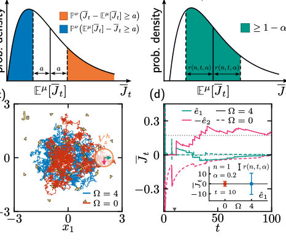
<figcaption class="paper-figure-caption"><b>Fig 1.</b> FIG. 1. (a) Schematic probability density of Jt for a single trajectory of finite length t ≥0. Fluctuations around the mean Eµ[Jt] are quantified by right (orange) and left (blue) tail probabilities. (b) Uncertainty quantification. The sample mean b Jn,t over n trajectories of length t deviates from Eµ[Jt] by less than the confidence radius r(n, t, α) with probability at least 1−α (green). (c) Trajectories of length t = 7.5 for a driven (Ω= 4, blue) and equilibrium (Ω= 0, red) Ornstein-Uhlenbeck process with identical ps and λgap. Yellow arrows depict js, and V h z (orange) probes coarse-grained currents along ˆe1 (green) and −ˆe2 (magenta). (d) Corresponding currents Jt approach their...</figcaption>
</figure>
<figure class="paper-figure-card">
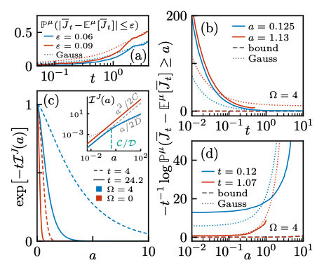
<figcaption class="paper-figure-caption"><b>Fig 2.</b> FIG. 2. (a) Probability that |Jt −Eµ[Jt]| is less than ε = 0.06 (20%, blue) or ε = 0.09 (30%, red) of the stationary mean remains small beyond the relaxation time λ−1 gap = 1, and is overestimated by the Gaussian approximation. (b,d) Empirical rate −t−1 log Pµ(Jt −Eµ[Jt] ≥a) compared with IJ(a) of the bound and a Gaussian approximation, as a function of (b) t at fixed a and (d) a at fixed t. (c) Concentration bound as a function of a at different times for the driven (blue) and equilibrium (red) dynamics. Inset: Interpolation between the Gaussian regime a2/2C at small and the exponential regime a/2D at large deviations, crossing over at a∗= C/D (green); at equilibrium (red) it remains...</figcaption>
</figure>
<figure class="paper-figure-card">
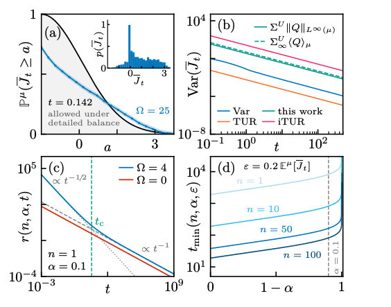
<figcaption class="paper-figure-caption"><b>Fig 3.</b> FIG. 3. (a) Violation of the equilibrium bound (grey) by the empirical deviation probability (blue) for driven dynamics (Ω= 25) detects irreversibility even at short t. Inset: His- togram of Jt. (b) Steady-state variance Varµ(Jt) as a function of t, bounded from below by the TUR (orange) and from above by the existing iTUR (magenta) and our refined result (green). (c) Confidence radius r(n, t, α) for n = 1 and α = 0.1 as function of t. Out of equilibrium (blue), the tail contribution ∝t−1 dominates the error bars up to the crossover time tc (green), beyond which Gaussian scaling ∝t−1/2 takes over. At equilibrium (red), error bars are Gaussian at all times. (d) Minimal observation time...</figcaption>
</figure>
</div>

<p><strong>Summary.</strong> This paper develops advanced concentration inequalities to provide rigorous, nonasymptotic bounds on the uncertainty when estimating thermodynamic quantities from limited experimental data. By analyzing generalized currents, the authors quantify the required observation time and sample size needed to distinguish between equilibrium and non-equilibrium states. This offers a powerful theoretical framework for modern stochastic thermodynamics and data-driven physics.</p>
<p><strong>Why it may be interesting.</strong> This work provides rigorous, quantitative tools for analyzing non-equilibrium steady states, which is crucial for understanding energy dissipation and fluctuation theorems in complex physical systems, bridging statistical mechanics with data science.</p>
<details>
<summary>Detailed structure</summary>
<p><strong>Main problem.</strong> The paper derives nonasymptotic concentration inequalities to rigorously control the uncertainty associated with estimating thermodynamic quantities from finite-time or small-sample stochastic trajectories.</p>
<p><strong>Main result.</strong> It establishes refined inverse thermodynamic uncertainty relations (iTUR) and provides explicit confidence intervals, quantifying how observation time and sample size must scale to achieve a desired accuracy, especially highlighting differences between equilibrium and non-equilibrium dynamics.</p>
<p><strong>Method.</strong> The methodology relies on deriving concentration bounds (e.g., Cramér-Chernoff approach) for generalized currents and their sample means, extending techniques from stochastic processes theory to finite-data inference.</p>
<p><strong>Model / system.</strong> The analysis is performed on geometrically ergodic, time-homogeneous stochastic processes governed by overdamped Langevin equations on a continuous state space. The focus is on the dynamics' ability to relax to a stationary measure.</p>
<p><strong>Key observables.</strong> Generalized current ($ ext{J}<em n_t="n,t">t$), sample mean ($ar{ ext{J}}</em>$), and the overall entropy production rate ($\Sigma_U$).}$), local steady-state entropy production rate ($\Sigma_{loc</p>
<p><strong>Important parameters / regimes.</strong> Relaxation time, spectral gap ($\lambda_{	ext{gap}}$), dissipation rate, and the ratio $\Sigma_U/\lambda_{	ext{gap}}$ which quantifies the deviation from equilibrium.</p>
<p><strong>Assumptions / limitations.</strong> The dynamics are assumed to be geometrically ergodic, and the derivations rely on bounding moment-generating functions and utilizing properties of the underlying Markovian process.</p>
<p><strong>Figures summary.</strong> The notes do not provide a summary of figures, but they detail the mathematical forms of the concentration inequalities and the dependence of the required observation time/sample size on the dissipation factor.</p>
<p><strong>Paper structure.</strong> The paper builds from deriving concentration inequalities for the generalized current in finite time, extends these bounds to the sample mean over multiple independent paths, and culminates in deriving refined uncertainty relations and practical bounds for minimal observation time and sample size.</p>
</details>
<details>
<summary>Abstract</summary>
<p>We derive nonasymptotic upper bounds on the probability that a generalized current of a geometrically ergodic diffusion observed for any amount of time, or its sample mean over any arbitrary sample size, deviates from the stationary mean by more than any given amount. The concentration-of-measure behavior of generalized currents is universally governed by the relaxation time of the underlying dynamics, the locally observed dissipation rate, and the intrinsic local fluctuations of the observable. We uncover stark qualitative and quantitative differences in fluctuations in and out of thermodynamic equilibrium. We further obtain refined inverse thermodynamic uncertainty relations, bounding the variance of generalized currents from above. We construct nonasymptotic confidence intervals for controlling uncertainty in thermodynamic inference from small data, i.e., from short trajectories and small samples, and provide the first quantitative answer to when a trajectory is sufficiently long and a sample is sufficiently large. As an illustration, we apply our results to currents observed on a two-dimensional Ornstein-Uhlenbeck process in and out of equilibrium and show how they can be used to rigorously detect broken detailed balance.</p>
</details>
<p><sub><a href="#top">↑ back to top</a></sub></p>

<p><a id="paper-2609.03583"></a></p>
<h3 id="optimizing-atom-transport-gate-count-and-depth-with-parity-twine"><a href="http://arxiv.org/abs/2609.03583v1">Optimizing Atom Transport, Gate-Count and Depth with Parity Twine</a></h3>
<p><strong>Authors:</strong> Javad Kazemi, Michael Fellner, Riccardo J. Valencia-Tortora, Michael Schuler, Wolfgang Lechner<br>
<strong>Type:</strong> theory · <strong>Category:</strong> quantum information and computing · <strong>PDF:</strong> <a href="https://arxiv.org/pdf/2609.03583v1">https://arxiv.org/pdf/2609.03583v1</a><br>
<strong>Analysis basis:</strong> full PDF text, analyzed in chunks
<strong>Topic relevance:</strong> <code>Rydberg arrays</code> <strong>3/5</strong> · <code>QC/QI experiment</code> <strong>2/5</strong> · <code>analog quantum simulation</code> <strong>1/5</strong></p>
<div class="figure-strip-hint">↔ Scroll figures horizontally</div>
<div class="paper-figures-scroll">
<figure class="paper-figure-card">
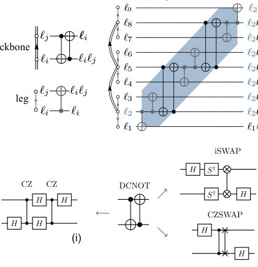
<figcaption class="paper-figure-caption"><b>Fig 1.</b> FIG. 1: (a) Information flow in a Parity Twine chain (highlighted in blue) with a backbone (black double lines) and two legs (grey lines) per backbone node. DC- NOT gates are applied along the backbone, while CNOT gates connect the backbone to the legs, systematically distributing the logical parity information, labeled by ℓi, throughout the system. (b) Equivalent decomposi- tions of the DCNOT gate using neutral-atoms-native CZ, CZSWAP, or iSWAP gates.</figcaption>
</figure>
<figure class="paper-figure-card">
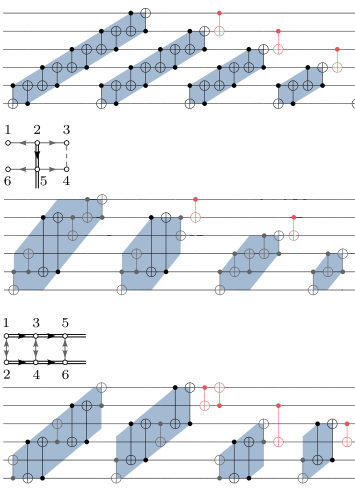
<figcaption class="paper-figure-caption"><b>Fig 2.</b> FIG. 2: Construction of Parity Twine networks as a cas- cade of Parity Twine chains (highlighted in blue) for (a) linear, (b) square, and (c) ladder layouts from a given Twine path (shown above each circuit). Black DCNOT gates implement the backbones, gray CNOT gates the legs, and red CNOT gates the decoding sequence that recovers the individual qubit labels at the end. Note that the circuits are stretched horizontally for visualiza- tion purposes to better highlight the structure of the Par- ity Twine networks and can be parallelized in practice. Therefore, they do not indicate their relative execution times.</figcaption>
</figure>
<figure class="paper-figure-card">
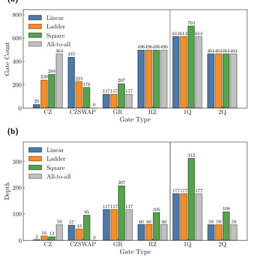
<figcaption class="paper-figure-caption"><b>Fig 3.</b> FIG. 4: Per-gate-type and total single- and two-qubit (a) gate counts and (b) gate depths for the QFT30 im- plemented using a CZSWAP-based Parity Twine network across different hardware layouts. Here, the 1Q category includes global rotations (GR) and local RZ rotations, while the 2Q category includes CZ and CZSWAP gates.</figcaption>
</figure>
<figure class="paper-figure-card">
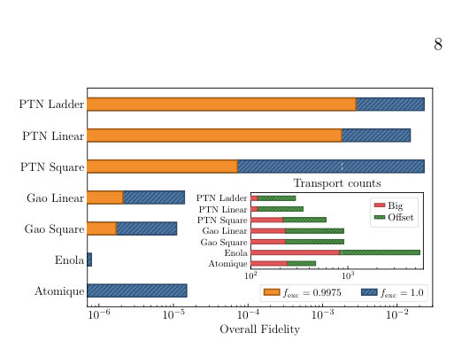
<figcaption class="paper-figure-caption"><b>Fig 4.</b> FIG. 5: Estimated fidelity of the QFT30 circuit for dif- ferent compilation methods. Blue bars show results for vanishing Rydberg crosstalk (fexc = 1), while orange bars consider a 0.25% crosstalk error (fexc = 99.75%). The in- set shows the numbers of big moves (red bars) and offset moves (green bars) required for both CZ and CZSWAP gate implementations. Data for all non-PTN methods are taken from Ref. [37].</figcaption>
</figure>
<figure class="paper-figure-card">
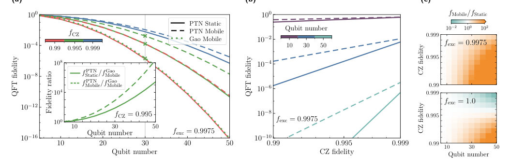
<figcaption class="paper-figure-caption"><b>Fig 5.</b> FIG. 6: Estimated QFT fidelity on a linear neutral-atom array using static (solid lines) and mobile (dashed lines) architectures as a function of (a) the number of qubits and (b) the CZ-gate fidelity. The dotted lines in panel (a) show the best previously reported QFT fidelities at fCZ = 0.995 obtained using Gao’s linear compilation [37]. Crosses mark the corresponding QFT fidelities at 30 qubits for the three compilation approaches for a CZ gate fidelity of fCZ = 99.5%. The inset shows the fidelity improvements of PTN-based implementations relative to Gao’s approach. (c) Ratio of the mobile to static PTN-based QFT fidelity in the presence (upper panel) and absence (lower panel) of Rydberg...</figcaption>
</figure>
</div>

<p><strong>Summary.</strong> This paper introduces Parity Twine Networks (PTNs) as a general, hardware-aware framework for compiling quantum circuits on neutral-atom processors. By optimizing for gate count, depth, and atom movement, the authors demonstrate significant resource savings for algorithms like the QFT. This work is crucial for realizing fault-tolerant quantum computation on scalable physical platforms.</p>
<p><strong>Why it may be interesting.</strong> It provides a concrete, resource-aware compilation strategy directly tailored to the physical constraints (connectivity, mobility) of state-of-the-art neutral-atom quantum hardware.</p>
<details>
<summary>Detailed structure</summary>
<p><strong>Main problem.</strong> The core problem is optimizing quantum circuit resources (gate count, depth, and atom transport) for quantum algorithms running on physical hardware.</p>
<p><strong>Main result.</strong> The proposed Parity Twine Network (PTN) framework achieves substantial resource savings for algorithms like the QFT, leading to estimated circuit fidelities three orders of magnitude higher than competing methods.</p>
<p><strong>Method.</strong> The authors develop a hardware-aware co-design framework by adapting PTNs to specific neutral-atom architectures, comparing different native entangling gates (CZ, CZSWAP, iSWAP).</p>
<p><strong>Model / system.</strong> The work focuses on neutral-atom quantum processors utilizing Rydberg-mediated gates and atom shuttling capabilities. The model uses Parity Twine Networks (PTNs) to encode arbitrary interaction graphs.</p>
<p><strong>Key observables.</strong> Two-qubit gate count, circuit depth, atom transport distance, and estimated circuit fidelity.</p>
<p><strong>Important parameters / regimes.</strong> The fidelity ratio comparison between mobile and static implementations, and the gate fidelity ($f_{CZ}$) threshold for performance crossover.</p>
<p><strong>Assumptions / limitations.</strong> The analysis assumes that atom shuttling can be utilized to realize composite gates like CZSWAP, and that the framework can be extended to approximate arithmetic circuits using Optimistic QFTs.</p>
<p><strong>Figures summary.</strong> Figures illustrate the information flow in Parity Twine chains and the physical construction of PTNs for various layouts (linear, square, ladder). Table III summarizes the scaling of gate counts and depths for QFT across these layouts.</p>
<p><strong>Paper structure.</strong> The paper introduces the PTN framework, demonstrates its application to the QFT on different layouts, compares the resource costs of CZ vs. CZSWAP implementations, and extends the concept to approximate quantum arithmetic circuits.</p>
</details>
<details>
<summary>Abstract</summary>
<p>We present an efficient implementation of the Parity Architecture for neutral-atom quantum processors. We adapt Parity Twine Networks (PTNs) to different atom layouts, native entangling gates, and atom-shuttling capabilities. This provides a general framework for hardware-aware optimization of gate count, circuit depth, and atom transport for quantum circuits encoding arbitrary interaction graphs in a common basis. Specifically, we develop PTN constructions based on different native entangling-gate realizations, namely CZ, CZSWAP, and iSWAP, providing flexibility to accommodate different hardware capabilities on both static and mobile neutral-atom platforms. Using the quantum Fourier transform (QFT) as a representative example, we demonstrate substantial reductions in two-qubit gate count, atom transport, and circuit depth. These resource savings translate into an estimated circuit fidelity three orders of magnitude higher than competing compilation strategies for a 30-qubit QFT. We further extend the construction to the recently introduced optimistic QFT and discuss the broader applicability of PTNs to other quantum algorithms on neutral-atom platforms.</p>
</details>
<p><sub><a href="#top">↑ back to top</a></sub></p>

<p><a id="paper-2609.04064"></a></p>
<h3 id="quantum-enhanced-phase-estimation-with-photon-added-even-and-odd-coherent-states-in-an-su11-interferometer"><a href="http://arxiv.org/abs/2609.04064v1">Quantum-Enhanced Phase Estimation with Photon-Added Even and Odd Coherent States in an SU(1,1) Interferometer</a></h3>
<p><strong>Authors:</strong> Abdelmajid El Maaroufi, Mouad Ait Maskour, Bouchra Maroufi, Mohammed Daoud, Saeed Haddadi<br>
<strong>Type:</strong> theory · <strong>Category:</strong> other · <strong>PDF:</strong> <a href="https://arxiv.org/pdf/2609.04064v1">https://arxiv.org/pdf/2609.04064v1</a><br>
<strong>Analysis basis:</strong> full PDF text, analyzed in chunks
<strong>Topic relevance:</strong> <code>interference shaping light</code> <strong>3/5</strong> · <code>quantum measurements</code> <strong>2/5</strong> · <code>analog quantum simulation</code> <strong>1/5</strong></p>
<div class="figure-strip-hint">↔ Scroll figures horizontally</div>
<div class="paper-figures-scroll">
<figure class="paper-figure-card">
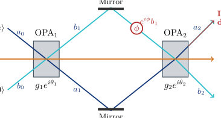
<figcaption class="paper-figure-caption"><b>Fig 1.</b> FIG. 1. . The schematic diagram of the SU(1,1) interferometer. PAECS and PAOCS |α±, m⟩are injected into input port a0 (mode a), while a squeezed vacuum state |r, 0⟩is injected into the other input port b0 (mode b). The first and second optical parametric am- plifiers, OPA1 and OPA2, are characterized by the gain factors g1 and g2 and the phase shifts θ1 and θ2, respectively. After OPA1, the two input ports a0 and b0 evolve into the intermediate fields a1 and b1, respectively, with a phase shift ϕ applied to field b1 by the phase shifter. The two fields are subsequently recombined in OPA2, producing the output ports a2 and b2. The pump fields drive the para- metric amplification processes in...</figcaption>
</figure>
<figure class="paper-figure-card">
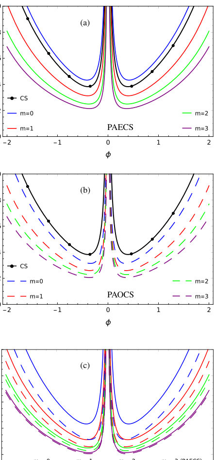
<figcaption class="paper-figure-caption"><b>Fig 2.</b> FIG. 2. The phase sensitivity based on intensity detection as a func- tion of ϕ. (a) PAECS and (b) PAOCS compared with conventional coherent state (CS: black curve). (c) Direct comparison between the PAECS and PAOCS inputs for different photon-addition numbers. The solid and dashed curves correspond to PAECS and PAOCS, re- spectively. Other parameters: α = 1, g = 1, and r = 0.5.</figcaption>
</figure>
<figure class="paper-figure-card">
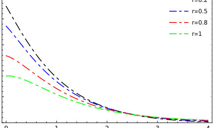
<figcaption class="paper-figure-caption"><b>Fig 3.</b> FIG. 4. Difference in phase-estimation performance δ between PAECS and PAOCS as a function of the photon-addition number m for different squeezing parameters r. Other parameters are α = 1, ϕ = 0.2, and g = 1.</figcaption>
</figure>
<figure class="paper-figure-card">
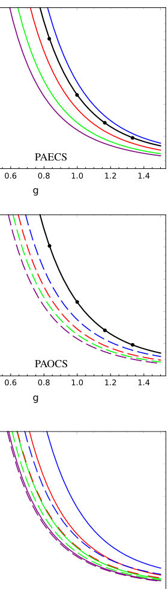
<figcaption class="paper-figure-caption"><b>Fig 4.</b> FIG. 3. The phase sensitivity based on intensity detection as a func- tion of g. (a) PAECS and (b) PAOCS compared with conventional coherent state (CS: black curve). (c) PAECS vs PAOCS for different photon-addition numbers. The solid and dashed curves correspond to PAECS and PAOCS, respectively. Other parameters: α = 1, ϕ = 0.2, and r = 0.5.</figcaption>
</figure>
<figure class="paper-figure-card">
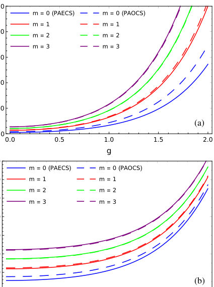
<figcaption class="paper-figure-caption"><b>Fig 5.</b> FIG. 5. (a) The total mean photon number NT inside the SU(1,1) interferometer as a function of g with α = 1 and r = 0.5. (b) NT versus r with α = 1 and g = 1. Solid and dashed curves correspond to PAECS and PAOCS inputs, respectively.</figcaption>
</figure>
</div>

<p><strong>Summary.</strong> This paper theoretically analyzes quantum-enhanced phase estimation in an SU(1,1) interferometer using photon-added even and odd coherent states. The authors demonstrate that adding photons significantly boosts phase sensitivity, pushing performance beyond the Standard Quantum Limit. Crucially, they show that this photon addition mitigates the initial dependence of the measurement on whether the state was initially even or odd.</p>
<p><strong>Why it may be interesting.</strong> This work is highly relevant to quantum optics and open quantum systems, as it explores using structured, nonclassical light states (photon-added states) to surpass fundamental measurement limits in an established quantum optical setup (SU(1,1) interferometer).</p>
<details>
<summary>Detailed structure</summary>
<p><strong>Main problem.</strong> The paper investigates how using photon-added even and odd coherent states enhances phase estimation precision in an SU(1,1) interferometer compared to standard coherent states.</p>
<p><strong>Main result.</strong> Photon addition significantly enhances phase sensitivity, pushing the achievable precision beyond the Standard Quantum Limit towards the Heisenberg Limit, while also diminishing the initial dependence on the state's even or odd parity.</p>
<p><strong>Method.</strong> Phase sensitivity is analyzed using intensity detection and the quantum Cramér-Rao bound, quantifying performance via the quantum Fisher information.</p>
<p><strong>Model / system.</strong> The physical model is an SU(1,1) interferometer, which is realized using two Optical Parametric Amplifiers (OPAs) acting on input states, specifically photon-added even/odd coherent states and a squeezed vacuum state.</p>
<p><strong>Key observables.</strong> Phase sensitivity ($\Delta\phi$), Quantum Fisher Information (QFI), and the Quantum Cramér-Rao Bound ($\Delta\phi_{QCRB}$).</p>
<p><strong>Important parameters / regimes.</strong> Photon-addition number ($m$), OPA gain ($g$), and squeezing parameter ($r$).</p>
<p><strong>Assumptions / limitations.</strong> The analysis assumes the use of specific nonclassical input states (PAECS/PAOCS) and models the interferometer using the SU(1,1) transformation.</p>
<p><strong>Figures summary.</strong> Figures illustrate the phase sensitivity ($\Delta\phi$) vs. OPA gain ($g$) for varying $m$, comparing results to the QCRB, SQL, and HL. Other figures show the convergence of the performance difference ($\delta$) and total photon number ($N_T$) as $m$ increases.</p>
<p><strong>Paper structure.</strong> The paper systematically analyzes the metrological enhancement by comparing the performance of PAECS and PAOCS against standard coherent states, first using intensity detection, and then determining the ultimate limit via QFI and QCRB, concluding with the convergence analysis.</p>
</details>
<details>
<summary>Abstract</summary>
<p>We investigate phase estimation in an SU(1,1) interferometer employing $m$-photon-added even and odd coherent states as nonclassical input resources. The phase sensitivity is evaluated through intensity detection and the error propagation method, while the ultimate precision limit is determined from the quantum Cramér-Rao bound with the quantum Fisher information serving as the relevant metrological quantity. Our results demonstrate that photon addition significantly enhances the phase sensitivity, increases the quantum Fisher information, and reduces the quantum Cramér-Rao bound, leading to a clear improvement over the corresponding even and odd coherent states. Furthermore, the achievable sensitivity exceeds the standard quantum limit and gradually approaches the Heisenberg scaling with increasing photon-addition number. We also find that the $m$-photon-added even coherent states exhibit a modest advantage over their odd counterparts. As $m$ increases, however, this distinction becomes progressively weaker, suggesting that photon addition diminishes the role of the initial parity of the coherent state in determining the interferometric performance.</p>
</details>
<p><sub><a href="#top">↑ back to top</a></sub></p>

<p><a id="paper-2609.03543"></a></p>
<h3 id="pulse-controlled-topologically-protected-quantum-batteries"><a href="http://arxiv.org/abs/2609.03543v1">Pulse-Controlled Topologically Protected Quantum Batteries</a></h3>
<p><strong>Authors:</strong> Jin Yang, Biao Xiong, Jibing Liu, Houguo Yu, Dehua Liu, Feng Mei, Chuanjia Shan<br>
<strong>Type:</strong> theory · <strong>Category:</strong> quantum information and computing · <strong>PDF:</strong> <a href="https://arxiv.org/pdf/2609.03543v1">https://arxiv.org/pdf/2609.03543v1</a><br>
<strong>Analysis basis:</strong> full PDF text, analyzed in chunks
<strong>Topic relevance:</strong> <code>analog quantum simulation</code> <strong>3/5</strong> · <code>methods for driven-dissipative</code> <strong>1/5</strong> · <code>quantum measurements</code> <strong>1/5</strong></p>
<div class="figure-strip-hint">↔ Scroll figures horizontally</div>
<div class="paper-figures-scroll">
<figure class="paper-figure-card">
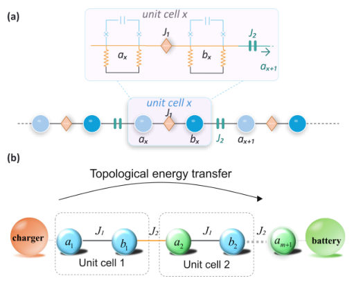
<figcaption class="paper-figure-caption"><b>Fig 1.</b> FIG. 1. (a) Schematic of the SSH-type qubit chain. Each unit cell contains two qubits ax and bx, with intra-cell cou- pling J1(t) and inter-cell coupling J2(t). (b) Schematic of the topological quantum battery. The leftmost qubit a1 serves as the charger, the rightmost qubit am+1 as the battery, and the intermediate qubits form a topologically protected channel for energy transfer.</figcaption>
</figure>
<figure class="paper-figure-card">
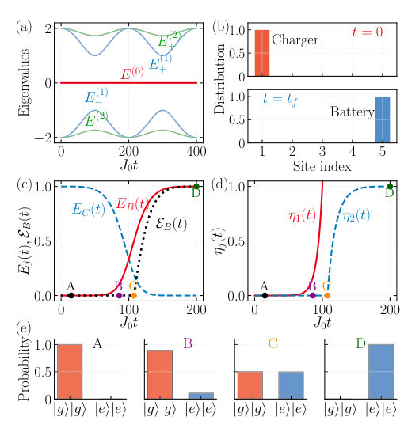
<figcaption class="paper-figure-caption"><b>Fig 2.</b> FIG. 2. (a) Energy spectrum versus t. (b) Zero-energy eigen- state at t = 0 (upper) and t = tf (lower). (c) Time evolution of normalized charger energy EC(t) (blue dashed), battery en- ergy EB(t) (red solid) and ergotropy EB(t) (black dotted). (d) Time evolution of η1(t) (red solid) and η2(t) (blue dashed). (e) Population distributions of ρB in |e⟩and |g⟩at the four selected time instants A, B, C, and D marked in (c) and (d). We set tf = 200/J0 and N = 5.</figcaption>
</figure>
<figure class="paper-figure-card">
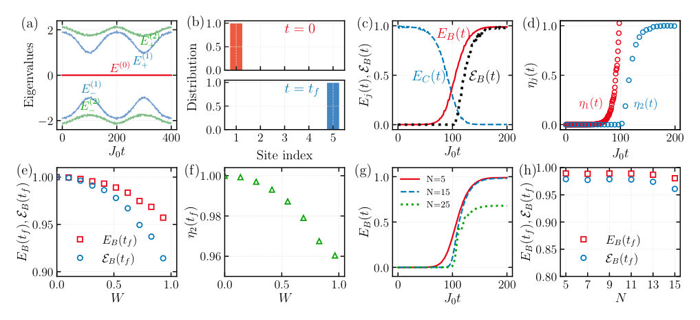
<figcaption class="paper-figure-caption"><b>Fig 3.</b> FIG. 3. (a) Energy spectrum with disorder. (b) Zero-energy eigenstate distributions at t = 0 (upper) and t = tf (lower). (c) Evolution of the normalized EC(t) (blue dashed), EB(t) (red solid), and EB(t) (black dotted) with disorder. (d) Evolution of efficiency η1(t) (red circles) and extraction efficiency η2(t) (blue circles). (e) Normalized EB(tf) (red squares) and EB(tf) (blue circles) versus W . (f) Extraction efficiency η2(tf) versus W . (g) Evolution of normalized EB(t) for N = 5, 15, 25. (h) Normalized EB(tf) (red squares) and EB(tf) (blue circles) versus N. All results are averaged over 20 disorder realizations, except for the data in (e) and (h), where we use 100 realizations to ensure...</figcaption>
</figure>
<figure class="paper-figure-card">
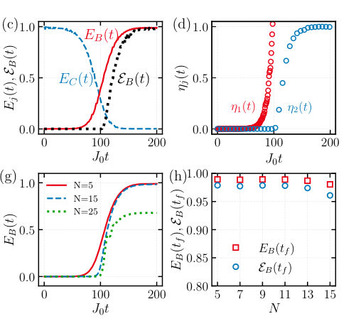
<figcaption class="paper-figure-caption"><b>Fig 4.</b> Fig. 3(e), we simulate the normalized stored energy EB(tf) and the ergotropy EB(tf) as a function of W. It is observed that, within a certain range of W, the presence of disorder has little effect on either quantity. However, when W becomes too large, both EB(tf) and EB(tf) decrease with increasing W, with the extractable work being more severely affected. This indicates that disorder does alter the quantum state ρB of the battery. Nevertheless, even for W = 1, we have EB(tf)/ωb larger than 0.95 and EB(tf)/ωb larger than 0.9, corresponding to reductions of only 5% and 10% relative to the ideal case, respectively. This demonstrates that even strong disorder does not significantly degrade the...</figcaption>
</figure>
<figure class="paper-figure-card">
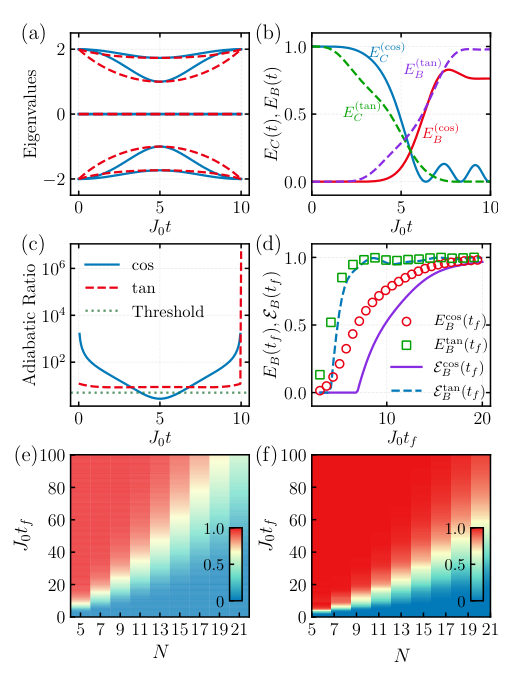
<figcaption class="paper-figure-caption"><b>Fig 5.</b> FIG. 4. (a) Energy spectra for cosine (blue solid) and tangent (red dashed) controls. (b) Normalized EC(t) and EB(t) under cosine (solid) and tangent (dashed) controls. (c) Adiabatic ratio C(t) for cosine (blue solid) and tangent (red dashed) controls; the green dotted line marks the threshold. (d) Nor- malized EB(tf) and EB(tf) versus tf for both controls. (e) Density plot of normalized EB(tf) versus N and tf for co- sine control. (f) Density plot of normalized EB(tf) versus N and tf for tangent control. We set tf = 10/J0 in (a)-(c) and µ = 0.8 throughout.</figcaption>
</figure>
</div>

<p><strong>Summary.</strong> This paper proposes a novel, topologically protected method for charging quantum batteries over long distances using a superconducting qubit chain modeled by the SSH Hamiltonian. By dynamically controlling the couplings with optimized pulses, the authors ensure efficient, directional energy transfer that is robust against noise and imperfections. This establishes a theoretical framework for enhancing quantum energy storage devices.</p>
<p><strong>Why it may be interesting.</strong> This work directly addresses quantum energy storage and transfer, which is highly relevant to quantum computing hardware development, particularly in superconducting qubit architectures.</p>
<details>
<summary>Detailed structure</summary>
<p><strong>Main problem.</strong> The paper addresses the challenge of developing a robust, long-distance, and topologically protected charging protocol for quantum batteries.</p>
<p><strong>Main result.</strong> They demonstrate that pulse-controlled topological charging can achieve complete energy transfer free of backflow, and this protocol remains robust against system imperfections and noise.</p>
<p><strong>Method.</strong> The study uses theoretical modeling based on the SSH model and analyzes the time evolution of the system's zero-energy eigenstate using time-dependent Hamiltonian techniques.</p>
<p><strong>Model / system.</strong> The system is modeled as a one-dimensional SSH-type qubit chain where the ends act as the charger and battery. The dynamics are controlled by time-dependent pulse-mediated couplings, allowing the system to adiabatically switch between edge states.</p>
<p><strong>Key observables.</strong> Charger energy ($E_C(t)$), battery energy ($E_B(t)$), extractable work (Ergotropy), and the adiabatic ratio ($C$).</p>
<p><strong>Important parameters / regimes.</strong> The control pulse shape (cosine vs. tangent) and the disorder strength ($W$) are key parameters used to test robustness and acceleration.</p>
<p><strong>Assumptions / limitations.</strong> The analysis relies on the adiabatic approximation, which requires the rate of change of couplings to be slow compared to the energy gap between eigenstates.</p>
<p><strong>Figures summary.</strong> Figures illustrate the SSH chain setup, the energy spectrum evolution, the time dependence of energy transfer, and the robustness of the zero-energy state against disorder.</p>
<p><strong>Paper structure.</strong> The paper progresses from establishing the topological framework using the SSH model to implementing the charging protocol via pulse control, and finally analyzing the performance and robustness against noise using optimized pulse shapes.</p>
</details>
<details>
<summary>Abstract</summary>
<p>Quantum batteries have emerged as a promising new generation of energy-storage devices for powering quantum technologies. Long-distance charging is particularly attractive because it minimizes interference between the charger and the battery, thereby attracting considerable interest. Here, we propose a topologically protected long-distance charging protocol for quantum batteries based on a pulse-controlled superconducting qubit chain. By dynamically modulating the pulse-mediated couplings, we realize topologically protected energy transfer from the charger to the battery. We show that the charging process is free of energy backflow and remains robust against imperfections in pulse control. Moreover, the energy stored in the battery at the target time is fully extractable, and the protocol remains effective for relatively large system sizes. To further accelerate charging, we optimize the pulse shape and elucidate the underlying physical mechanism. Our pulse-controlled topological quantum battery protocol provides a versatile framework for implementing long-distance topological charging and establishes a theoretical foundation for designing optimal-control strategies to enhance quantum battery performance.</p>
</details>
<p><sub><a href="#top">↑ back to top</a></sub></p>

<p><a id="paper-2609.03640"></a></p>
<h3 id="quantum-hamiltonian-evolution-for-coherent-quantum-learning"><a href="http://arxiv.org/abs/2609.03640v1">Quantum Hamiltonian Evolution for Coherent Quantum Learning</a></h3>
<p><strong>Authors:</strong> Ignacio B. Acedo, Javier Gonzalez-Conde, Pablo Rodriguez-Grasa, Barry C. Sanders, Lirandë Pira<br>
<strong>Type:</strong> theory · <strong>Category:</strong> quantum information and computing · <strong>PDF:</strong> <a href="https://arxiv.org/pdf/2609.03640v1">https://arxiv.org/pdf/2609.03640v1</a><br>
<strong>Analysis basis:</strong> full PDF text, analyzed in chunks
<strong>Topic relevance:</strong> <code>analog quantum simulation</code> <strong>3/5</strong> · <code>interference shaping light</code> <strong>1/5</strong> · <code>quantum measurements</code> <strong>1/5</strong></p>
<div class="figure-strip-hint">↔ Scroll figures horizontally</div>
<div class="paper-figures-scroll">
<figure class="paper-figure-card">
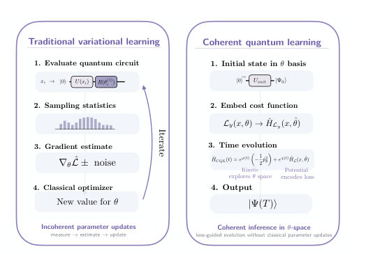
<figcaption class="paper-figure-caption"><b>Fig 1.</b> FIG. 1. Conceptual comparison between hybrid training and Coherent Quantum Learning (CQL). In the traditional approach (left), a parameterized quantum model is evaluated at individual parameter settings, and measurement outcomes are used by a classical optimizer to iteratively update the pa- rameters. In CQL (right), the model parameters are promoted to quantum degrees of freedom, the objective function is en- coded as a loss Hamiltonian, and training is realized through coherent Hamiltonian evolution.</figcaption>
</figure>
<figure class="paper-figure-card">
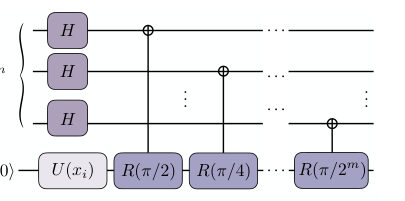
<figcaption class="paper-figure-caption"><b>Fig 2.</b> FIG. 2. Circuit for one coherent training step. An ancilla register controls discretized parameter shifts and encodes the loss as phase.</figcaption>
</figure>
<figure class="paper-figure-card">
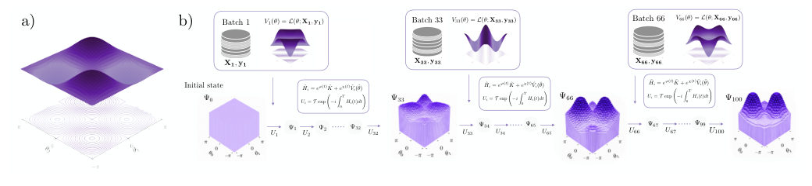
<figcaption class="paper-figure-caption"><b>Fig 3.</b> FIG. 3. Numerical illustration of batch-based Coherent Quantum Learning (CQL). (a) Loss landscape L(θ; X, y) evaluated over the full training dataset as a function of the two variational parameters θ0, θ1, with contours indicating the structure of the global objective. (b) Evolution of the probability distribution of the parameter state ˆθ across sequential batched coherent training. Starting from a uniform superposition Ψ0 over parameter space, the state is evolved under the CQL Hamiltonian, where the loss potential is constructed from individual training samples (batch size 1). The loss landscape associated with select batches is shown alongside the corresponding parameter distributions,...</figcaption>
</figure>
<figure class="paper-figure-card">
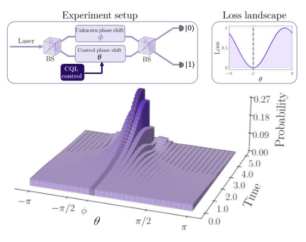
<figcaption class="paper-figure-caption"><b>Fig 4.</b> FIG. 4. Upper left: Schematic of the interferometric phase- estimation setup. A single photon propagates through a bal- anced Mach–Zehnder interferometer containing an unknown phase shift ϕ and a controllable phase shift θ, which is con- trolled by the CQL protocol. Upper right: Corresponding loss landscape, L(θ, ϕ) = sin2[(θ −ϕ)/2], whose global minimum identifies the unknown phase. Main: Time evolution of the probability distribution over the discretized parameter register, |Ψ(θ, t)|2. Starting from a uniform superposition, the coher- ent dynamics progressively localize the probability amplitude around the global minimum of the loss landscape, yielding an accurate estimate of the unknown...</figcaption>
</figure>
<figure class="paper-figure-card">
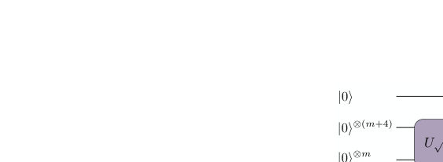
<figcaption class="paper-figure-caption"><b>Fig 5.</b> FIG. 5. Circuit that implements the block encoding of H from the block encodings of √</figcaption>
</figure>
</div>

<p><strong>Summary.</strong> This paper proposes Coherent Quantum Learning (CQL), a novel quantum training framework where the optimization process is replaced by coherent Hamiltonian evolution. By encoding the loss function into the system's Hamiltonian, the system naturally evolves toward parameters that minimize the loss through quantum interference. This offers a purely quantum alternative to classical gradient-based optimization in quantum machine learning.</p>
<p><strong>Why it may be interesting.</strong> The core idea of encoding optimization into Hamiltonian dynamics is highly relevant to AMO physics, suggesting that physical evolution itself can perform complex computational tasks like optimization, potentially linking quantum simulation to machine learning.</p>
<details>
<summary>Detailed structure</summary>
<p><strong>Main problem.</strong> The paper addresses the need for a quantum mechanical training framework for quantum machine learning, moving beyond classical optimization loops.</p>
<p><strong>Main result.</strong> It introduces Coherent Quantum Learning (CQL), a framework where parameter evolution is governed by a Hamiltonian encoding the loss function, achieving optimal parameter estimation via quantum interference.</p>
<p><strong>Method.</strong> The training is realized by evolving the system unitarily under a time-dependent Hamiltonian that combines kinetic terms and a loss-encoding Hamiltonian. This process replaces classical gradient estimation with coherent interference.</p>
<p><strong>Model / system.</strong> The model uses a parameterized quantum circuit whose parameters are treated as quantum degrees of freedom. The loss function $L(x, 	heta)$ is encoded into a diagonal Hamiltonian $\hat{H}_L$ acting on the parameter register.</p>
<p><strong>Key observables.</strong> The probability amplitude concentrating near low-loss configurations, and the final state distribution peaking at optimal parameters.</p>
<p><strong>Important parameters / regimes.</strong> The evolution time $    au$, the structure of the loss Hamiltonian $\hat{H}_L$, and the batch size for sequential updates.</p>
<p><strong>Assumptions / limitations.</strong> The framework assumes the ability to construct block encodings for the loss Hamiltonian and relies on sequential evolution for batched training.</p>
<p><strong>Figures summary.</strong> Figure 1 conceptually contrasts traditional hybrid training with CQL's loss-guided evolution. Figure 6 numerically compares the loss evolution of CQL against traditional gradient descent for a 1D binary classification task.</p>
<p><strong>Paper structure.</strong> The paper first introduces the CQL concept, detailing the Hamiltonian construction using block encodings for various loss types (polynomial, smooth). It then details the sequential, batched training algorithm and validates the approach with numerical simulations on classification and phase estimation tasks.</p>
</details>
<details>
<summary>Abstract</summary>
<p>We introduce Coherent Quantum Learning (CQL), a training framework for quantum learning models in which the model parameters are quantum degrees of freedom evolved under a Hamiltonian that encodes the loss function. Current quantum machine learning retains classical optimization: parameters are updated by a classical outer loop using gradient estimates from measurements, and quantum coherence has no role in the training dynamics, just as in any classical treatment of the same problem. In the quantum case, a parameter register initialized in superposition evolves unitarily, and probability amplitude concentrates near low-loss configurations through interference, without gradient computation or classical feedback. We give an explicit construction using block encodings and Hamiltonian simulation, applicable to arbitrary parameterized circuits. Numerical experiments on binary classification and interferometric phase estimation confirm that the evolved distribution peaks at the optimal parameters, matching gradient-based performance. The construction is compatible in principle with fault-tolerant implementations and extends to batched training via sequential Hamiltonian evolution.</p>
</details>
<p><sub><a href="#top">↑ back to top</a></sub></p>

<p><a id="paper-2609.03314"></a></p>
<h3 id="quantum-vacuum-nonlinearities-in-laser-interferometers"><a href="http://arxiv.org/abs/2609.03314v1">Quantum Vacuum Nonlinearities in Laser Interferometers</a></h3>
<p><strong>Authors:</strong> Zain Mehdi, Joseph J. Hope, Simon A. Haine<br>
<strong>Type:</strong> theory · <strong>Category:</strong> other · <strong>PDF:</strong> <a href="https://arxiv.org/pdf/2609.03314v1">https://arxiv.org/pdf/2609.03314v1</a><br>
<strong>Analysis basis:</strong> full PDF text, analyzed in chunks
<strong>Topic relevance:</strong> <code>interference shaping light</code> <strong>3/5</strong> · <code>quantum measurements</code> <strong>2/5</strong></p>
<div class="figure-strip-hint">↔ Scroll figures horizontally</div>
<div class="paper-figures-scroll">
<figure class="paper-figure-card">
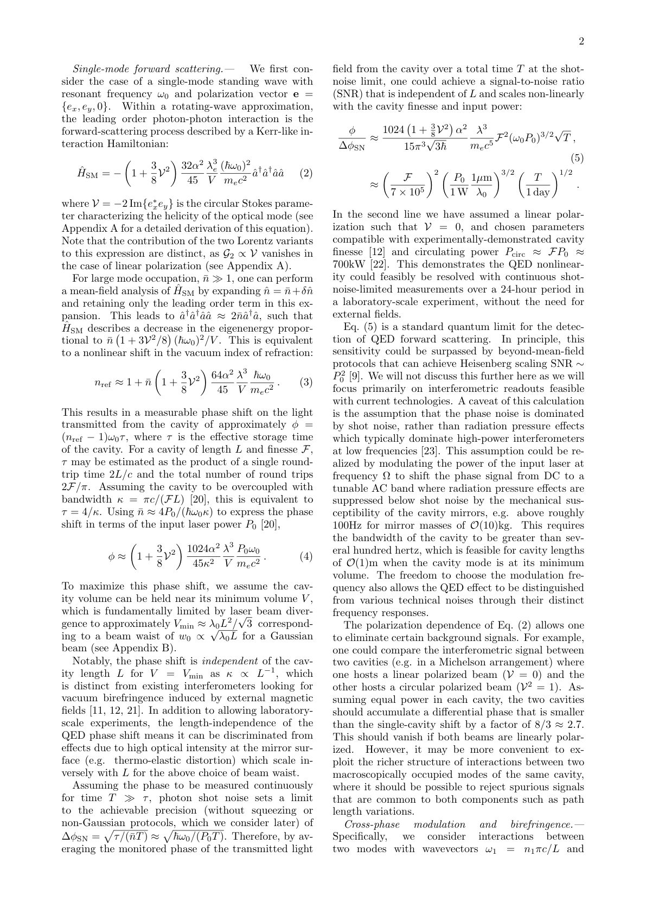
<figcaption class="paper-figure-caption"><b>Fig 1.</b> Low-resolution page preview, page 2</figcaption>
</figure>
<figure class="paper-figure-card">
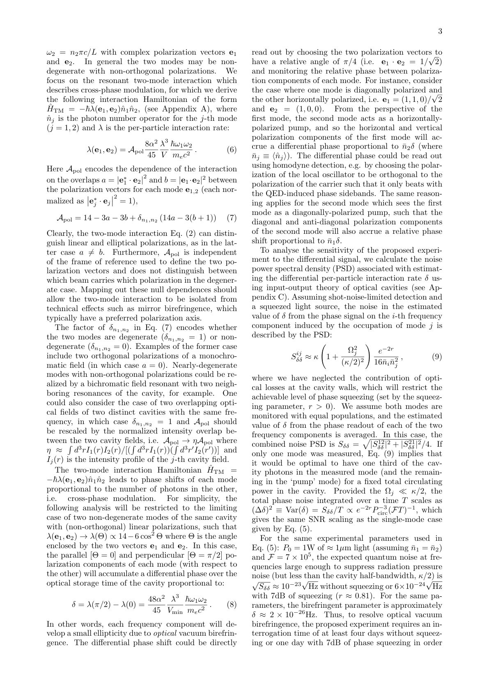
<figcaption class="paper-figure-caption"><b>Fig 2.</b> Low-resolution page preview, page 3</figcaption>
</figure>
<figure class="paper-figure-card">
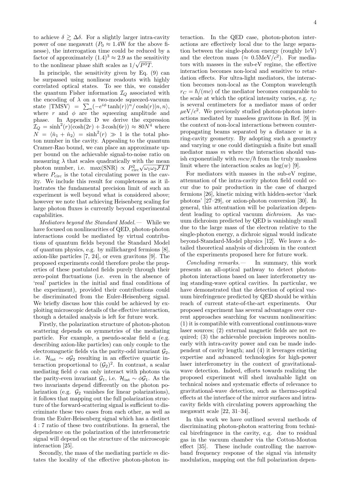
<figcaption class="paper-figure-caption"><b>Fig 3.</b> Low-resolution page preview, page 4</figcaption>
</figure>
<figure class="paper-figure-card">
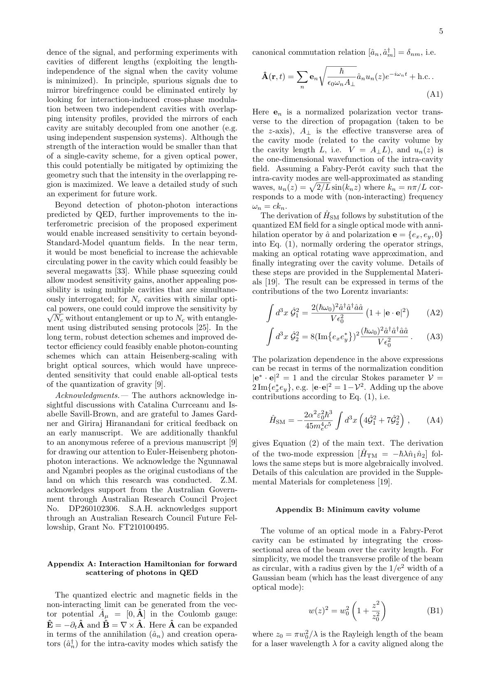
<figcaption class="paper-figure-caption"><b>Fig 4.</b> Low-resolution page preview, page 5</figcaption>
</figure>
<figure class="paper-figure-card">
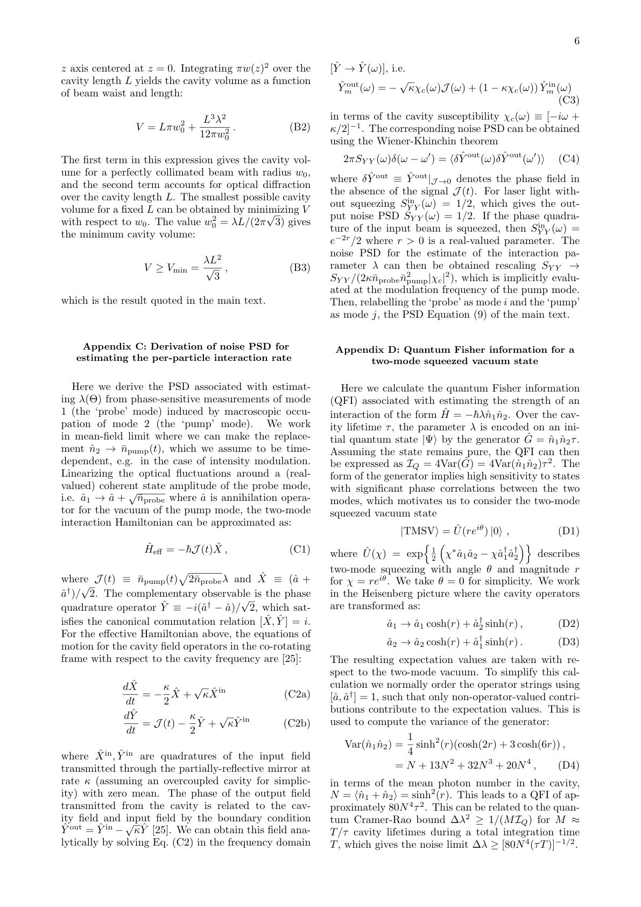
<figcaption class="paper-figure-caption"><b>Fig 5.</b> Low-resolution page preview, page 6</figcaption>
</figure>
</div>

<p><strong>Summary.</strong> This paper outlines a method to experimentally test the nonlinear interaction between photons in the vacuum using high-finesse laser interferometers. By analyzing the effective Hamiltonian derived from QED, the authors predict a measurable phase shift proportional to the optical power. The work details the necessary quantum estimation techniques to determine the sensitivity and feasibility of such a measurement.</p>
<p><strong>Why it may be interesting.</strong> This work directly bridges high-energy physics predictions (QED vacuum effects) with cutting-edge experimental quantum optics techniques (interferometry and quantum metrology), making it highly relevant for AMO physicists working on quantum field measurements.</p>
<details>
<summary>Detailed structure</summary>
<p><strong>Main problem.</strong> The paper proposes all-optical methods to test photon-photon interactions in the vacuum, which are predicted by Quantum Electrodynamics (QED). It aims to do this without requiring external magnetic fields.</p>
<p><strong>Main result.</strong> The measurable signal is a phase shift ($\phi$) or a differential phase shift ($\delta$) in a standing-wave laser interferometer, which scales nonlinearly with the circulating optical power.</p>
<p><strong>Method.</strong> The analysis involves deriving effective interaction Hamiltonians ($\hat{H}_{	ext{SM}}$ and $\hat{H}_{	ext{TM}}$) from the Euler-Heisenberg effective action and calculating the resulting phase shifts and achievable Signal-to-Noise Ratios (SNR) using quantum estimation theory.</p>
<p><strong>Model / system.</strong> The system is a standing-wave laser interferometer utilizing a Fabry-Perot cavity. The underlying physics is the nonlinear interaction between photons mediated by vacuum zero-point fluctuations, described by QED effective Lagrangians.</p>
<p><strong>Key observables.</strong> Phase shift ($\phi$), differential phase shift ($\delta$), and the Signal-to-Noise Ratio (SNR).</p>
<p><strong>Important parameters / regimes.</strong> Optical power ($P_0$), cavity volume ($V$), vacuum susceptibility parameters ($\alpha^2$), and the cavity finesse ($F$).</p>
<p><strong>Assumptions / limitations.</strong> The analysis uses the rotating-wave approximation (RWA) and assumes the detection is shot-noise limited, with some advanced sections considering squeezed light states.</p>
<p><strong>Paper structure.</strong> The paper progresses from deriving the general QED interaction Hamiltonian ($\hat{H}_{	ext{int}}$) to specific single-mode ($\hat{H}_{	ext{SM}}$) and two-mode ($\hat{H}_{	ext{TM}}$) interactions. It then calculates the resulting phase shifts and finally analyzes the achievable precision limits using quantum estimation theory (QFI).</p>
</details>
<details>
<summary>Abstract</summary>
<p>We propose all-optical tests of photon-photon interactions in the matter vacuum using standing-wave laser interferometers, which do not require external magnetic fields and use conventional laser sources. We show that the interferometric detection of photon-photon scattering predicted by quantum electrodynamics is within reach of laboratory-scale experiments with a sensitivity that improves nonlinearly with the circulating power within the cavity. We outline how such an experiment could be adapted to probe properties of quantum fields beyond the Standard Model of particle physics.</p>
</details>
<p><sub><a href="#top">↑ back to top</a></sub></p>

<p><a id="paper-2609.03226"></a></p>
<h3 id="revealing-many-body-phases-at-finite-temperatures-through-quantum-coherence-distribution"><a href="http://arxiv.org/abs/2609.03226v1">Revealing Many-Body Phases at finite temperatures through Quantum Coherence Distribution</a></h3>
<p><strong>Authors:</strong> Antonio Palamara, Nicola Lo Gullo, Antonello Sindona, Francesco Plastina<br>
<strong>Type:</strong> theory · <strong>Category:</strong> statistical mechanics · <strong>PDF:</strong> <a href="https://arxiv.org/pdf/2609.03226v1">https://arxiv.org/pdf/2609.03226v1</a><br>
<strong>Analysis basis:</strong> full PDF text, analyzed in chunks
<strong>Topic relevance:</strong> <code>analog quantum simulation</code> <strong>3/5</strong> · <code>quantum measurements</code> <strong>2/5</strong></p>
<div class="figure-strip-hint">↔ Scroll figures horizontally</div>
<div class="paper-figures-scroll">
<figure class="paper-figure-card">
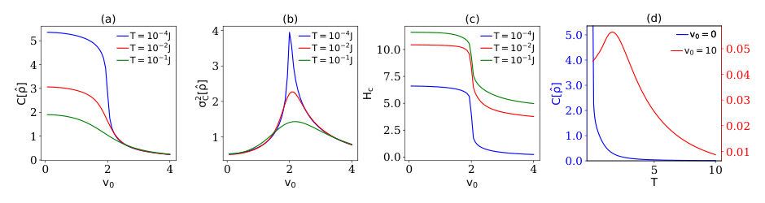
<figcaption class="paper-figure-caption"><b>Fig 1.</b> Figure 1. Finite-temperature behavior of the coherence probability distribution in the non-interacting Aubry-Andr´e model. (a) Coherence C[ ˆρβ ] and (b) variance of the coherence probability distribution, σ2 C[ ˆρβ ], as functions of the quasiperiodic potential strength, for three different temperatures. (c) Entropy of the coherence probability distribution, Hc, as a function of V0. (d) Temperature dependence of the coherence C[ ˆρβ ] deep in the delocalized and localized phases. All results are obtained for a lattice of N = 103 sites.</figcaption>
</figure>
<figure class="paper-figure-card">
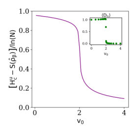
<figcaption class="paper-figure-caption"><b>Fig 2.</b> Figure 2. Contribution of the individual eigenstate coherences to the uncollected entropy Huc in the high-temperature limit, as a function of the quasiperiodic potential strength V0, for a lattice of N = 103</figcaption>
</figure>
<figure class="paper-figure-card">
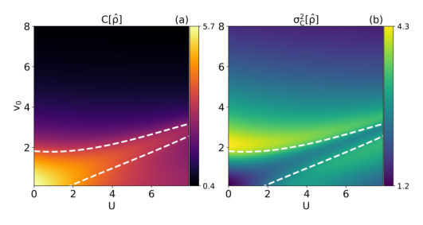
<figcaption class="paper-figure-caption"><b>Fig 3.</b> Figure 3. Ground-state coherence probability distribution in the in- teracting Aubry-Andr´e model. (a) Coherence C[ ˆρ] and (b) variance σ2c [ ˆρ], as functions of the interaction strength U and quasiperiodic potential strength V0. The dashed white lines indicate the phase boundaries obtained from the maxima of ∂C[ ˆρ]</figcaption>
</figure>
<figure class="paper-figure-card">
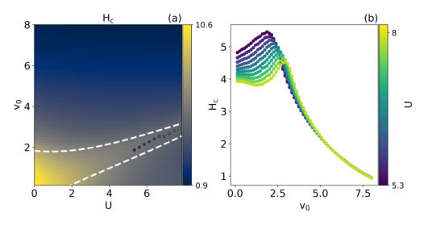
<figcaption class="paper-figure-caption"><b>Fig 4.</b> Figure 5. Entropy of the coherence probability distribution in the in- teracting Aubry-Andr´e model at finite temperature. (a) Entropy Hc as a function of the quasiperiodic potential strength V0 and interac- tion strength U for a thermal state with β = 1J. The dashed white lines indicate the phase boundaries shown in Fig. 3 and are included as guides to the eye. Panel (b): Entropy as a function of V0 for dif- ferent interaction strengths U.</figcaption>
</figure>
<figure class="paper-figure-card">
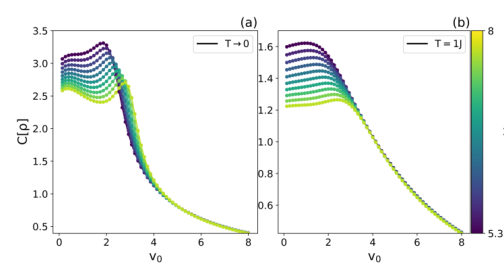
<figcaption class="paper-figure-caption"><b>Fig 5.</b> Figure 4. Effect of finite temperature on the coherence in the inter- acting Aubry-Andr´e model. (a) Ground-state coherence as a func- tion of the quasiperiodic potential strength V0 for different interac- tion strenght U. (b) Thermal-state coherence at temperature T = 1J as a function of V0 for the same values of U.</figcaption>
</figure>
</div>

<p><strong>Summary.</strong> This work introduces a novel diagnostic tool based on the entropy of the quantum coherence distribution to characterize quantum phases. By applying it to the interacting Aubry-André model, the authors demonstrate that this entropy remains robustly sensitive to quantum phase transitions, even when significant thermal fluctuations are present, outperforming simpler moment-based diagnostics.</p>
<p><strong>Why it may be interesting.</strong> The focus on using coherence entropy to distinguish quantum phases from thermal noise is highly relevant for AMO physics, as many experimental platforms (like cold atoms) are inherently studied at finite, non-zero temperatures.</p>
<details>
<summary>Detailed structure</summary>
<p><strong>Main problem.</strong> The paper aims to develop a diagnostic framework to probe both single-particle and many-body quantum phases at finite temperatures, where thermal fluctuations typically obscure quantum critical signatures.</p>
<p><strong>Main result.</strong> The entropy of the quantum coherence distribution ($H_c$) proves to be a significantly more robust indicator than individual moments, retaining clear signatures of underlying quantum phases across increasing thermal fluctuations.</p>
<p><strong>Method.</strong> The authors construct a diagnostic based on the full probability distribution of quantum coherence, derived via a Two-Point Measurement protocol, and analyze its statistical moments, particularly its entropy.</p>
<p><strong>Model / system.</strong> The analysis is first applied to the non-interacting Aubry-André (AA) model to study localization transitions, and then extended to the interacting AA model containing spinless fermions with nearest-neighbor interactions.</p>
<p><strong>Key observables.</strong> Entropy of the coherence distribution ($H_c$), first and higher-order moments of the coherence distribution, and the relative entropy of coherence ($C[\hat{
ho}]$).</p>
<p><strong>Important parameters / regimes.</strong> Finite temperature ($eta$), potential strength ($V_0$), and interaction strength ($U$). The localization transition is marked by $V_0=2$ in the non-interacting case.</p>
<p><strong>Assumptions / limitations.</strong> The analysis of the interacting model is computationally limited to small system sizes ($N=12$) due to the exponential growth of the Hilbert space.</p>
<p><strong>Figures summary.</strong> Figures illustrate the finite-temperature behavior of coherence moments and entropy for the non-interacting model, and compare ground-state versus thermal-state coherence and entropy across the phase diagram of the interacting model.</p>
<p><strong>Paper structure.</strong> The paper progresses by first establishing the diagnostic framework using the non-interacting AA model to show $H_c$'s robustness against temperature. It then extends this analysis to the interacting AA model to characterize three distinct many-body phases (Metallic, ABI, CDW) using $H_c$ as the primary tool.</p>
</details>
<details>
<summary>Abstract</summary>
<p>We introduce a diagnostic framework based on the full probability distribution of quantum coherence to probe single-particle and many-body phases at finite temperature. We first apply this approach to the localization transition in the non-interacting Aubry-André model and then extend the analysis to its interacting counterpart, whose phase diagram is substantially richer. We show that the moments of the coherence distribution provide clear signatures of quantum phase transitions and capture the emergence of many-body phases. More importantly, we find that the entropy of the coherence distribution emerges as an even more powerful indicator, retaining clear signatures of the underlying quantum phases while remaining remarkably robust against increasing thermal fluctuations.</p>
</details>
<p><sub><a href="#top">↑ back to top</a></sub></p>

<p><a id="paper-2609.03421"></a></p>
<h3 id="tunable-topological-enhancement-of-covariant-quantum-fisher-information-via-non-bloch-skin-effect-in-non-hermitian-ssh-lattices"><a href="http://arxiv.org/abs/2609.03421v1">Tunable topological enhancement of covariant quantum Fisher information via non-Bloch skin effect in non-Hermitian SSH lattices</a></h3>
<p><strong>Authors:</strong> Qi-Cheng Wu, Yan-Hui Zhou, Tong Liu, Dong-Xu Chen, Chui-Ping Yang<br>
<strong>Type:</strong> theory · <strong>Category:</strong> quantum information and computing · <strong>PDF:</strong> <a href="https://arxiv.org/pdf/2609.03421v1">https://arxiv.org/pdf/2609.03421v1</a><br>
<strong>Analysis basis:</strong> full PDF text, analyzed in chunks
<strong>Topic relevance:</strong> <code>analog quantum simulation</code> <strong>3/5</strong> · <code>driven-dissipative phase transition</code> <strong>2/5</strong></p>
<div class="figure-strip-hint">↔ Scroll figures horizontally</div>
<div class="paper-figures-scroll">
<figure class="paper-figure-card">
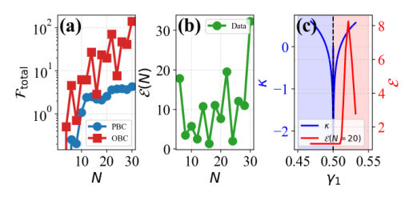
<figcaption class="paper-figure-caption"><b>Fig 1.</b> FIG. 1: (Color online) (a) Total CQFI versus N for PBC (blue circles) and OBC (red squares). (b) Enhancement factor E(N) (green circles). (c) E(N = 20) versus γ1 across Bloch and non-Bloch phases. The vertical dashed line marks γ1 = t1. Shaded regions indicate the Bloch (blue) and non-Bloch (red) phases.</figcaption>
</figure>
<figure class="paper-figure-card">
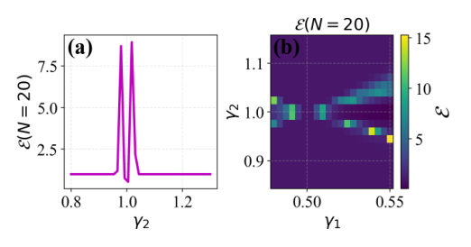
<figcaption class="paper-figure-caption"><b>Fig 2.</b> FIG. 2: (Color online) (a) E(N = 20) versus γ2 for fixed γ1 = 0.52, showing a peak at γ2 ≈1.018. (b) Two-dimensional colormap of E(N = 20) in the (γ1, γ2) plane, revealing a ridge of high enhancement.</figcaption>
</figure>
<figure class="paper-figure-card">
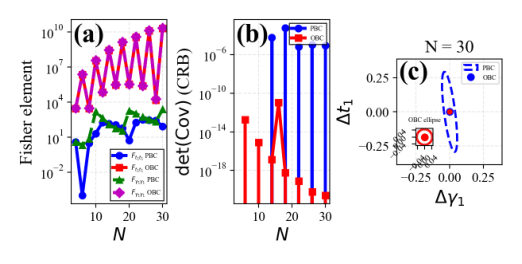
<figcaption class="paper-figure-caption"><b>Fig 3.</b> FIG. 3: (Color online) (a) Diagonal elements of the Fisher information matrix for (t1, γ1) versus N. (b) Determinant of the covariance matrix (Cramér-Rao bound) versus N. (c) 2- σ covariance ellipses for PBC (blue dashed) and OBC (red solid) at N = 30. The OBC ellipse is shown in the magnified inset (scaled by 107). The area ratio is 3.78 × 1015.</figcaption>
</figure>
<figure class="paper-figure-card">
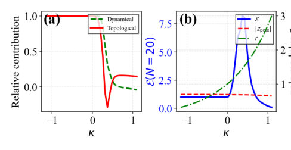
<figcaption class="paper-figure-caption"><b>Fig 4.</b> FIG. 4: (Color online) Mechanism analysis for N = 20. (a) Relative contributions of dynamical (green dashed) and topo- logical (red solid) parts versus κ. (b) Enhancement factor E (blue solid), pole modulus |zpole| (red dashed), and GBZ ra- dius r (green dash-dotted) versus κ. The vertical line marks the peak position.</figcaption>
</figure>
</div>

<p><strong>Summary.</strong> This paper investigates how the non-Hermitian skin effect in SSH lattices can topologically enhance the quantum precision limit, quantified by the CQFI. By comparing open boundary conditions (OBC) to periodic boundary conditions (PBC), the authors show a large, tunable enhancement factor $E(N)$. This establishes a novel, experimentally accessible spatial-domain strategy for quantum metrology.</p>
<p><strong>Why it may be interesting.</strong> This work provides a concrete, physically realizable mechanism—the NHSE—to boost quantum sensing precision beyond standard bounds, linking topological properties directly to metrological enhancement in open quantum systems.</p>
<details>
<summary>Detailed structure</summary>
<p><strong>Main problem.</strong> To extend the covariant quantum Fisher information (CQFI) formalism to multi-mode non-Hermitian systems to find a tunable topological enhancement mechanism for quantum metrology.</p>
<p><strong>Main result.</strong> The CQFI exhibits a tunable topological enhancement factor $E(N)$ due to the non-Hermitian skin effect (NHSE), which can surpass 30 for modest system sizes and significantly reduce estimation uncertainty.</p>
<p><strong>Method.</strong> The authors calculate the total CQFI by summing contributions over the Generalized Brillouin Zone (GBZ) manifold, utilizing partial-fraction decomposition to find the asymptotic scaling behavior.</p>
<p><strong>Model / system.</strong> The study uses non-Hermitian Su-Schrieffer-Heeger (SSH) lattices, which are analyzed using a Hamiltonian framework that incorporates non-Hermitian parameters ($\gamma_1, \gamma_2$) leading to the NHSE.</p>
<p><strong>Key observables.</strong> Covariant Quantum Fisher Information (CQFI), Enhancement Factor $E(N) = F_{	ext{OBC}}^{	ext{total}} / F_{	ext{PBC}}^{	ext{total}}$, and the joint Cramér-Rao bound.</p>
<p><strong>Important parameters / regimes.</strong> Non-Bloch decay rate ($\kappa$), system size ($N$), and non-Hermitian asymmetry parameters ($\gamma_1, \gamma_2$).</p>
<p><strong>Assumptions / limitations.</strong> The analysis relies on extending CQFI from single-mode to multi-mode systems and assumes the applicability of non-Bloch band theory for open boundary conditions.</p>
<p><strong>Figures summary.</strong> Figures illustrate the total CQFI scaling (OBC vs. PBC), the enhancement factor $E(N)$ vs. $N$ (showing large enhancement), and the non-monotonic dependence of $E$ on the non-Hermitian parameters $\gamma_1$.</p>
<p><strong>Paper structure.</strong> The paper first establishes the CQFI formalism for non-Hermitian systems, then derives the OBC total CQFI by summing over the GBZ, contrasting this with the PBC sum. The core development involves analyzing the resulting enhancement factor $E(N)$ and demonstrating its tunability and topological origin.</p>
</details>
<details>
<summary>Abstract</summary>
<p>The covariant quantum Fisher information (CQFI) has recently been established as the ultimate precision benchmark for pseudo-Hermitian sensors [Phys. Rev. Lett. 136, 080802 (2026)], yet existing analyses are limited to single-mode systems. Here we extend the CQFI formalism to multi-mode non-Hermitian Su-Schrieffer-Heeger lattices and reveal tunable topological enhancement enabled by the non-Hermitian skin effect (NHSE). Under open boundary conditions, the NHSE deforms the conventional Brillouin zone into a generalized Brillouin zone of radius r = exp(\k{appa}), where \k{appa} denotes the non-Bloch decay rate. While the total CQFI scales linearly with system size N, its prefactor depends critically on \k{appa}, yielding an enhancement factor E(N) = F_OBC / F_PBC that exceeds 30 for N ~ 30, substantially outperforming periodic-boundary sensors. The enhancement is robust against moderate local disorder and supports multi-parameter estimation, with the joint Cramér-Rao bound reduced by up to 15 orders of magnitude. These findings establish a spatial-domain mechanism for quantum metrology that complements time-domain strategies and is experimentally accessible using topoelectrical circuits, photonic lattices, and superconducting circuits with current technology.</p>
</details>
<p><sub><a href="#top">↑ back to top</a></sub></p>

<p><a id="paper-2609.03271"></a></p>
<h3 id="moire-induced-altermagnetism-from-nonmagnetic-constituents"><a href="http://arxiv.org/abs/2609.03271v1">Moiré-induced altermagnetism from nonmagnetic constituents</a></h3>
<p><strong>Authors:</strong> Jingtian Shi, Maxim Khodas, Ivar Martin<br>
<strong>Type:</strong> theory · <strong>Category:</strong> strongly correlated electrons · <strong>PDF:</strong> <a href="https://arxiv.org/pdf/2609.03271v1">https://arxiv.org/pdf/2609.03271v1</a><br>
<strong>Analysis basis:</strong> full PDF text, analyzed in chunks
<strong>Topic relevance:</strong> <code>analog quantum simulation</code> <strong>3/5</strong> · <code>Keldysh / 2PI / non-Gaussian methods</code> <strong>1/5</strong></p>
<div class="figure-strip-hint">↔ Scroll figures horizontally</div>
<div class="paper-figures-scroll">
<figure class="paper-figure-card">
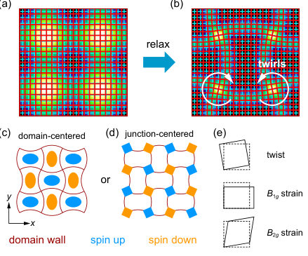
<figcaption class="paper-figure-caption"><b>Fig 1.</b> FIG. 1. (a), (b) Schematic of lattice relaxation of lattice- mismatched moir´e square lattice from (a) the rigid configura- tion to (b) the stable configuration. The red and cyan grids respectively represent an elastic material layer and a rigid sub- strate, the former having a smaller natural lattice constant than the latter. In the background, darker (brighter) color represents regions with lower (higher) local interlayer cou- pling energy, or the moir´e domain (domain wall) regions. The curved arrows mark the twirl chiralities. (c), (d) Schematics of Wannier orbitals of electron moir´e bands in the two scenarios described on the top of each panel. The coordinate frame is marked at the...</figcaption>
</figure>
<figure class="paper-figure-card">
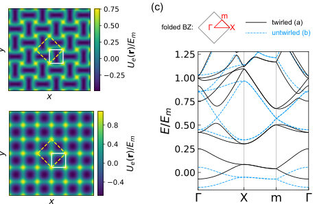
<figcaption class="paper-figure-caption"><b>Fig 2.</b> FIG. 2. (a), (b) The electron potential Ue(r) = D∇· u(r) obtained under ϵ = 0.05, θ = B1g = B2g = 0, V1/µ = 0.004 and D = 10Em via lattice relaxation performed with (a) √</figcaption>
</figure>
<figure class="paper-figure-card">
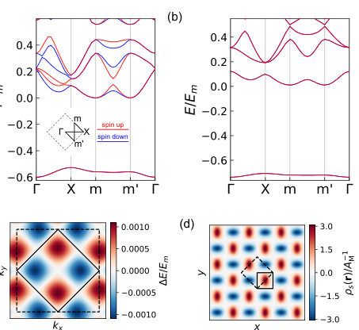
<figcaption class="paper-figure-caption"><b>Fig 3.</b> FIG. 3. (a) The spin-resolved mean-field moir´e band struc- ture under ϵ = 0.05, θ = B1g = B2g = 0, V1/µ = 0.004, D = 10Em, interaction strength Cm = 0.2Em and filling fac- tor corresponding to one electron per √</figcaption>
</figure>
<figure class="paper-figure-card">
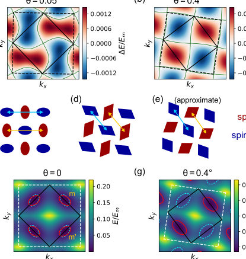
<figcaption class="paper-figure-caption"><b>Fig 4.</b> FIG. 4. (a), (b) The spin splitting of the lowest mean-field band of a system with the same parameters as the one shown in Fig. 3(c), except for a finite twist angle between the elas- tic material and the substrate illustrated at the top of each panel. Here the curved lines outline the band touching. (c)- (e) Schematics of effective lattice models that describe the lowest bands under (c) θ = 0, (d) relatively small finite θ, and (e) relatively large θ, where the arrows illustrate the nearest spin-inequivalent hopping in the three cases. The shapes are only schematic and reflect the symmetries of the system. The mirror symmetries of (e) are approximate in the physical sys- tems it points to....</figcaption>
</figure>
<figure class="paper-figure-card">
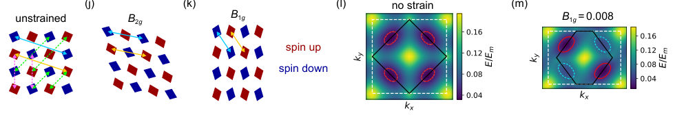
<figcaption class="paper-figure-caption"><b>Fig 5.</b> FIG. 5. (a) The spin-resolved mean-field moir´e band structure of the system with the same parameters as in Fig. 3(a) except that here D = −10Em instead of 10Em. (b) The spin splitting of the lowest band in (a). The solid (dashed) black square is the first BZ of the √</figcaption>
</figure>
</div>

<p><strong>Summary.</strong> This work details how structural distortions in moiré superlattices of nonmagnetic materials can induce altermagnetism. By combining continuum elasticity theory with Hartree-Fock calculations, the authors show that electron interactions, mediated by moiré potential variations, open correlated gaps and generate symmetry-protected spin splittings. This magnetic order is highly tunable by external strains and twist angles.</p>
<p><strong>Why it may be interesting.</strong> The focus on emergent magnetism (altermagnetism) in nonmagnetic, structurally tunable systems is highly relevant to understanding correlated phases in novel quantum materials, which often bridge concepts from condensed matter theory and quantum simulation.</p>
<details>
<summary>Detailed structure</summary>
<p><strong>Main problem.</strong> The paper proposes a mechanism for nonmagnetic materials to develop altermagnetic order through moiré interference, driven by structural relaxation and spontaneous twirls in moiré domain walls.</p>
<p><strong>Main result.</strong> The moiré potential, coupled with electron interactions, opens a correlated insulating gap and induces spin-splitting that can manifest as $d$-wave or $g$-wave altermagnetism, which is tunable by twist angle and strain.</p>
<p><strong>Method.</strong> The study uses theoretical modeling involving continuum elasticity for lattice relaxation and self-consistent Hartree-Fock theory to solve for spin-resolved mean-field band structures.</p>
<p><strong>Model / system.</strong> The system is a moiré lattice formed by lattice-mismatched nonmagnetic layers. The physics is modeled using an effective continuum Hamiltonian incorporating kinetic energy, deformation potential, and electron-electron interactions (Hubbard physics).</p>
<p><strong>Key observables.</strong> Altermagnetic spin splitting ($\Delta E_k$), spin density map ($
ho_s(\mathbf{r})$), and anisotropic transport properties.</p>
<p><strong>Important parameters / regimes.</strong> Twist angle ($  heta$), strain components ($ ext{B1g},   ext{B2g}$), and electron interaction strength (Hubbard coupling).</p>
<p><strong>Assumptions / limitations.</strong> Assumes collinear spins and initially neglects SOC for some analyses; the model relies on continuum elasticity approximations.</p>
<p><strong>Figures summary.</strong> Figures illustrate lattice relaxation, Wannier orbitals for different domain types, non-interacting band structures, and spin-resolved mean-field band structures showing the evolution of spin splitting with twist angle and strain.</p>
<p><strong>Paper structure.</strong> The paper progresses from establishing the structural mechanism (lattice relaxation/domain walls) to developing the electronic model (Hamiltonian/HF theory), and finally analyzing the resulting magnetic order (altermagnetism) and its tunability via external parameters like strain and twist.</p>
</details>
<details>
<summary>Abstract</summary>
<p>We propose a mechanism for nonmagnetic materials to develop altermagnetic order by moiré interference with nonmagnetic substrate, which is driven by structural relaxation and spontaneous twirls in moiré domain walls of lattice-mismatched moiré square lattices. When doped with one electron per moiré domain, a correlated insulating gap is opened by electron interaction. Depending on the location of the moiré potential minima, the moiré bands can show d-wave or g-wave altermagnetic splitting. The former can be enhanced by a finite twist angle; the latter is sensitive to strains that drive a transition to d-wave.</p>
</details>
<p><sub><a href="#top">↑ back to top</a></sub></p>

<p><a id="paper-2609.03274"></a></p>
<h3 id="resolving-the-magnetic-ground-state-controversy-in-ruo2-through-a-flat-magnetic-energy-landscape"><a href="http://arxiv.org/abs/2609.03274v1">Resolving the Magnetic Ground-State Controversy in RuO2 through A Flat Magnetic Energy Landscape</a></h3>
<p><strong>Authors:</strong> Tianxiao Liang, Fanhan Kong, Jijun Zhao, Xue Jiang<br>
<strong>Type:</strong> theory · <strong>Category:</strong> strongly correlated electrons · <strong>PDF:</strong> <a href="https://arxiv.org/pdf/2609.03274v1">https://arxiv.org/pdf/2609.03274v1</a><br>
<strong>Analysis basis:</strong> full PDF text, analyzed in chunks
<strong>Topic relevance:</strong> <code>analog quantum simulation</code> <strong>3/5</strong> · <code>methods for driven-dissipative</code> <strong>1/5</strong></p>
<div class="figure-strip-hint">↔ Scroll figures horizontally</div>
<div class="paper-figures-scroll">
<figure class="paper-figure-card">
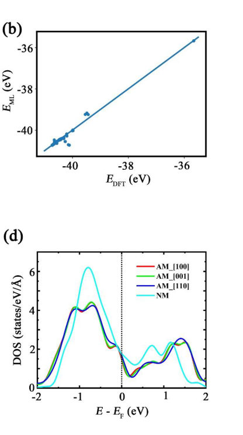
<figcaption class="paper-figure-caption"><b>Fig 1.</b> FIG. 1. Flat magnetic energy landscape and competing magnetic states in rutile RuO2. (a) Crystal</figcaption>
</figure>
<figure class="paper-figure-card">
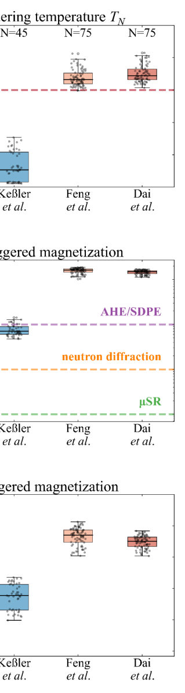
<figcaption class="paper-figure-caption"><b>Fig 2.</b> FIG. 2. Sample-dependent magnetic order and experimental detectability in RuO2. (a) Effective</figcaption>
</figure>
<figure class="paper-figure-card">
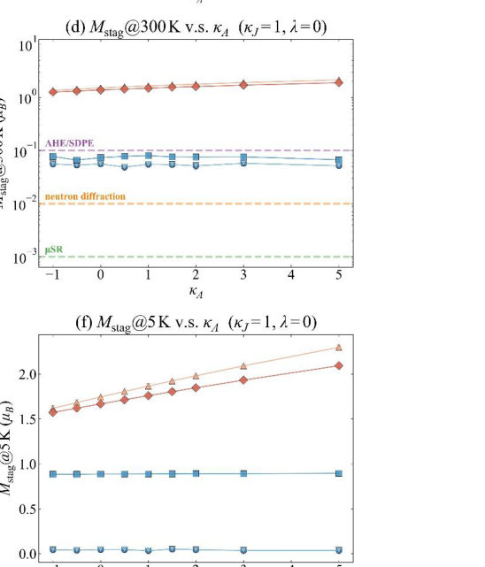
<figcaption class="paper-figure-caption"><b>Fig 3.</b> FIG. 3. Independent modulation of the Heisenberg exchange and Landau channels in RuO2 ( =0).</figcaption>
</figure>
<figure class="paper-figure-card">
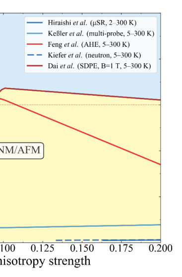
<figcaption class="paper-figure-caption"><b>Fig 4.</b> FIG. 4. Temperature-SOC (T-λ) magnetic phase diagram. Phase boundaries are determined by the</figcaption>
</figure>
</div>

<p><strong>Summary.</strong> This work develops a unified theoretical framework to explain the conflicting experimental reports on the magnetic ground state of RuO2. By modeling the competition between Heisenberg and Stoner magnetism within a flat energy landscape, the authors show that intrinsic material defects select the final magnetic state by tuning the localized exchange coupling. This provides a general mechanism for understanding magnetic phase selection in correlated oxides.</p>
<p><strong>Why it may be interesting.</strong> The concept of a nearly flat energy landscape where subtle perturbations dictate macroscopic quantum phases is highly relevant to understanding frustrated quantum magnets and emergent quantum phenomena.</p>
<details>
<summary>Detailed structure</summary>
<p><strong>Main problem.</strong> The paper resolves the long-standing controversy regarding the magnetic ground state of Rutile RuO2, which is experimentally reported as either nonmagnetic or altermagnetic.</p>
<p><strong>Main result.</strong> The magnetic state selection is governed by an exceptionally flat energy landscape, where material perturbations primarily modify the localized Heisenberg exchange interaction, leading to sample-dependent magnetic order.</p>
<p><strong>Method.</strong> The authors developed a generalized environment-dependent spin-lattice Hamiltonian, parameterized using high-throughput DFT data and solved via large-scale Monte Carlo simulations.</p>
<p><strong>Model / system.</strong> The system is Rutile RuO2, modeled by a Hamiltonian unifying localized Heisenberg exchange, itinerant Stoner magnetism, and SOC-mediated spin-lattice interactions. The framework is designed to capture the competition between these magnetic terms.</p>
<p><strong>Key observables.</strong> Magnetic energy landscape, Néel temperature (T_N), staggered magnetization (M_stag), and the magnetic ground state selection mechanism.</p>
<p><strong>Important parameters / regimes.</strong> Localized Heisenberg exchange coupling, itinerant Stoner polarization contribution, and the strength of spin-orbit coupling (SOC) anisotropy ($\lambda$).</p>
<p><strong>Assumptions / limitations.</strong> The magnetic state selection is primarily controlled by the competition between Heisenberg and Landau terms, and the framework is generalizable to other perturbations like strain or doping.</p>
<p><strong>Figures summary.</strong> Figures illustrate the nearly degenerate energy minima (NM vs AM states) on the flat energy landscape, and show how varying exchange coupling ($\kappa_J$) or Landau coupling ($\kappa_A$) independently modulates the calculated magnetic order parameters.</p>
<p><strong>Paper structure.</strong> The paper first introduces the unified Hamiltonian and parameterization from DFT data. It then uses MC simulations to map the energy landscape, demonstrating the near-degeneracy. Finally, it analyzes how external perturbations (defects) select specific magnetic states by modifying the exchange terms, while SOC only controls orientation.</p>
</details>
<details>
<summary>Abstract</summary>
<p>Rutile RuO2 is a prominent candidate for altermagnetism, yet its magnetic ground state remains highly controversial, with experiments reporting either a nonmagnetic state or altermagnetic order. Here, we develop a generalized environment-dependent spin-lattice framework that unifies localized Heisenberg exchange, itinerant Stoner magnetism via Landau spin fluctuations, and spin-orbit-coupling-mediated spin-lattice interactions. Parameterized from a high-throughput first-principles database using machine-learning and solved by large-scale Monte Carlo simulations, the framework reveals an exceptionally flat magnetic energy landscape in RuO2, where the nonmagnetic state lies nearly degenerate with multiple altermagnetic configurations. We find that material perturbations, exemplified by intrinsic defects, select distinct magnetic ground states primarily by modifying the localized Heisenberg exchange, with perturbation-induced itinerant Stoner polarization provides an essential secondary contribution. Spin-orbit coupling controls the orientation and stability of the Néel vector, but does not determine the emergence of long-range magnetic order. These results provide a unified explanation for the conflicting experimental observations and establish a general microscopic framework for understanding how material perturbations select competing magnetic ground states in systems with nearly flat magnetic energy landscapes.</p>
</details>
<p><sub><a href="#top">↑ back to top</a></sub></p>

<p><a id="paper-2609.03014"></a></p>
<h3 id="shuttling-aware-dynamical-decoupling-for-quantum-charge-coupled-devices"><a href="http://arxiv.org/abs/2609.03014v1">Shuttling-aware dynamical decoupling for quantum charge-coupled devices</a></h3>
<p><strong>Authors:</strong> Linus Schulte, Aaron Sander, Robert Wille<br>
<strong>Type:</strong> theory · <strong>Category:</strong> other · <strong>PDF:</strong> <a href="https://arxiv.org/pdf/2609.03014v1">https://arxiv.org/pdf/2609.03014v1</a><br>
<strong>Analysis basis:</strong> full PDF text, analyzed in chunks
<strong>Topic relevance:</strong> <code>QC/QI experiment</code> <strong>3/5</strong> · <code>quantum measurements</code> <strong>1/5</strong></p>
<div class="figure-strip-hint">↔ Scroll figures horizontally</div>
<div class="paper-figures-scroll">
<figure class="paper-figure-card">
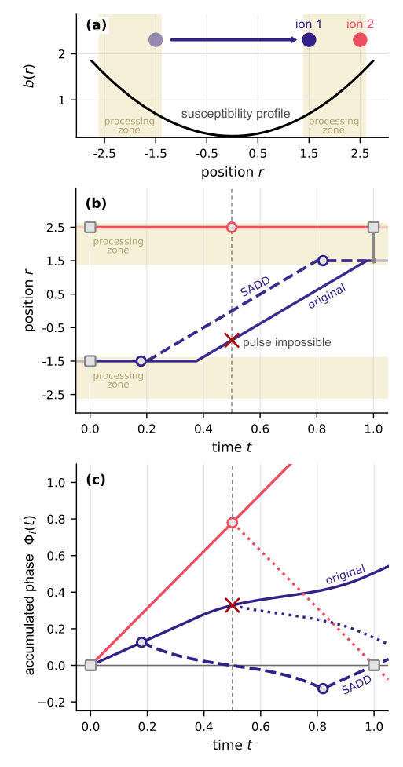
<figcaption class="paper-figure-caption"><b>Fig 1.</b> FIG. 1. Ion trajectories determine decoupling pulse availability and noise exposure. (a) Ion transport subject to a quadratic susceptibility profile b(r), facilitating shared lo- calized control access between the ions. (b) Ion trajectories with rectangular markers indicating logical gates. A decou- pling pulse (round marker) at the window midpoint is optimal for the stationary ion 2 but suboptimal and infeasible for the moving ion 1 due to processing zone access. Rerouting it along the dashed SADD trajectory symmetrizes the susceptibility it samples and admits the two shown pulses. (c) Accumu- lated quasistatic phase Φi(t) for δω(r) = δω0b(r) without DD (solid), under a midpoint pulse...</figcaption>
</figure>
<figure class="paper-figure-card">
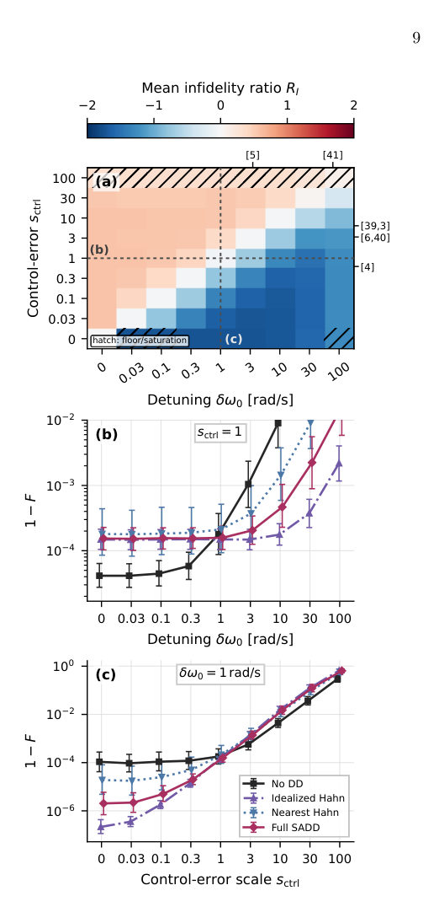
<figcaption class="paper-figure-caption"><b>Fig 2.</b> FIG. 2. SADD improves fidelity in the dephasing- dominated regime and outperforms Nearest Hahn. (a) Mean Full-SADD/no-DD infidelity log ratio RI over the detuning scale δω0 and the pulse-error scale sctrl, with blue favoring SADD. The two domains meet along the diagonal. Bracketed ticks locate published device measurements on each axis [3–6, 39–41], and hatched settings contain circuits at the resolvable infidelity floor or at saturation and should not be read quantitatively. The dashed lines mark the two cross- sections below. (b) Geometric-mean absolute infidelity along the sctrl = 1 row, placing Full SADD between the realizable and the idealized Hahn baseline. (c) The same quantity along...</figcaption>
</figure>
<figure class="paper-figure-card">
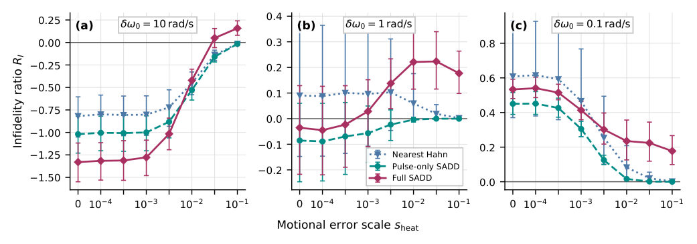
<figcaption class="paper-figure-caption"><b>Fig 3.</b> FIG. 3. Ion rerouting is beneficial while transport is cheap. State-infidelity log ratios RI against a common no-DD reference over the motional-error scale sheat of Eq. (25), under a uniform susceptibility profile at sctrl = 1 and three detunings: (a) δω0 = 10, (b) 1, and (c) 0.1 rad s−1. Negative values improve on No DD. Each panel is scaled to its own data, since the benefit spans decades across the three settings.</figcaption>
</figure>
<figure class="paper-figure-card">
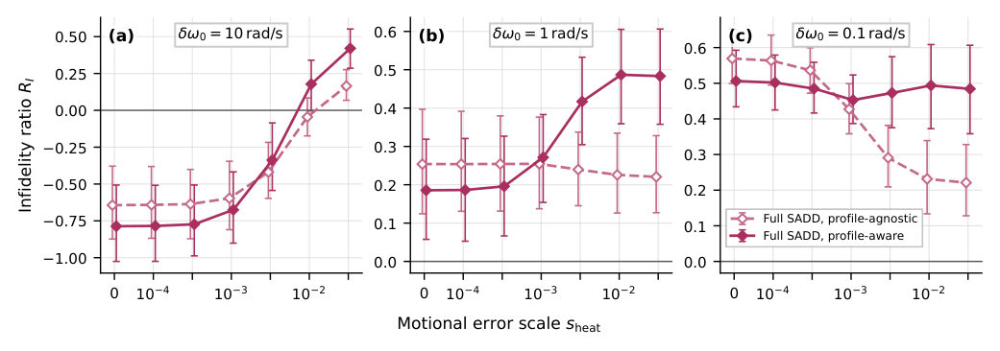
<figcaption class="paper-figure-caption"><b>Fig 4.</b> FIG. 4. Profile-aware compilation is beneficial while transport is cheap. Profile-aware against profile-agnostic Full SADD under the heterogeneous susceptibility profile of Eq. (27), otherwise as in Fig. 3: (a) δω0 = 10, (b) 1, and (c) 0.1 rad s−1. All three detunings share one compiled schedule set.</figcaption>
</figure>
<figure class="paper-figure-card">

<figcaption class="paper-figure-caption"><b>Fig 5.</b> FIG. 5. The phase objective requires slow noise rela- tive to critical-window length but is robust to short- ranged spatial variation. Mean dephasing-exponent log ratio Rχ of Full SADD relative to No DD, shown against (a) the temporal correlation time τc and (b) the spatial cor- relation length ℓc. Negative values indicate better protec- tion against dephasing. The objective’s predictiveness breaks down for correlation times τc that are of the same order as or smaller than the critical-window durations, while it remains robust to correlation lengths even below the site spacing.</figcaption>
</figure>
</div>

<p><strong>Summary.</strong> This paper introduces Shuttling-aware Dynamical Decoupling (SADD), a novel compiler technique for trapped-ion quantum processors. SADD overcomes the limitation of standard decoupling methods by jointly optimizing refocusing pulses and ion movement paths. By integrating transport constraints into the error mitigation objective, the authors demonstrate a significant boost in quantum gate fidelity for QCCD architectures.</p>
<p><strong>Why it may be interesting.</strong> This work directly addresses the practical limitations of applying quantum error correction techniques (like DD) to solid-state or ion-trap quantum hardware that requires physical movement of qubits, providing a crucial compiler-level optimization strategy.</p>
<details>
<summary>Detailed structure</summary>
<p><strong>Main problem.</strong> Conventional dynamical decoupling methods fail in Quantum Charge-Coupled Device (QCCD) architectures because they ignore the constraints imposed by ion shuttling during quantum operations.</p>
<p><strong>Main result.</strong> The proposed Shuttling-aware Dynamical Decoupling (SADD) compiler pass significantly improves final-state fidelity by jointly optimizing pulse placement and ion rerouting.</p>
<p><strong>Method.</strong> SADD is an offline compiler pass that minimizes a derived phase objective function by jointly selecting refocusing pulses and local ion rerouting paths.</p>
<p><strong>Model / system.</strong> The system involves trapped ions in a QCCD architecture, where noise is modeled by a position-dependent detuning Hamiltonian, and the process is constrained by physical ion transport trajectories.</p>
<p><strong>Key observables.</strong> Average final-state fidelity, the dephasing exponent ($\chi(T)$), and the derived phase objective function ($J_\Phi$).</p>
<p><strong>Important parameters / regimes.</strong> The degree of dephasing noise relative to control/transport errors, and the total schedule length.</p>
<p><strong>Assumptions / limitations.</strong> The methods assume a rank-one model for detuning fluctuations and that the optimization can be performed by minimizing a compile-time phase proxy objective function.</p>
<p><strong>Figures summary.</strong> Figures illustrate the coupled effects of ion transport on pulse availability and noise sampling, showing how rerouting can cancel phase accumulation.</p>
<p><strong>Paper structure.</strong> The paper first establishes the failure of conventional DD in shuttling environments, derives a joint objective function ($J_\Phi$) that incorporates trajectory-aware phase accumulation, and then details the greedy, local optimization process using a CP-SAT solver to minimize this objective.</p>
</details>
<details>
<summary>Abstract</summary>
<p>Dynamical decoupling (DD) helps maintain high-fidelity quantum computations by suppressing dephasing noise through carefully timed refocusing pulses. In quantum charge-coupled device (QCCD) architectures, however, where ions are shuttled throughout the device, transport constrains when pulses can be applied and affects the phase accumulated by an ion. Conventional DD methods do not account for shuttling and may therefore schedule pulses that must be omitted or shifted after transport scheduling, weakening the protection from dephasing. We therefore introduce shuttling-aware dynamical decoupling (SADD), an offline compiler pass that jointly selects refocusing pulses and local ion rerouting while preserving logical-gate timings and the total schedule length. In benchmark simulations, SADD improves average final-state fidelity over both the original schedules and a simple nearest-feasible Hahn-echo baseline when dephasing dominates control and transport errors and varies slowly enough for DD. Rerouting enables otherwise infeasible pulse timings, while spatial information about the noise can provide further gains. These benefits disappear, however, when the added transport introduces too much error. Overall, our results show that coordinating DD with ion transport is an effective compiler strategy for reducing dephasing in QCCD processors.</p>
</details>
<p><sub><a href="#top">↑ back to top</a></sub></p>

<p><a id="paper-2609.03825"></a></p>
<h3 id="energetic-costs-of-subspace-quantum-error-correction"><a href="http://arxiv.org/abs/2609.03825v1">Energetic Costs of Subspace Quantum Error Correction</a></h3>
<p><strong>Authors:</strong> Jakub Czartowski, Felix C. Binder<br>
<strong>Type:</strong> theory · <strong>Category:</strong> quantum information and computing · <strong>PDF:</strong> <a href="https://arxiv.org/pdf/2609.03825v1">https://arxiv.org/pdf/2609.03825v1</a><br>
<strong>Analysis basis:</strong> full PDF text, analyzed in chunks
<strong>Topic relevance:</strong> <code>quantum measurements</code> <strong>3/5</strong></p>
<div class="figure-strip-hint">↔ Scroll figures horizontally</div>
<div class="paper-figures-scroll">
<figure class="paper-figure-card">

<figcaption class="paper-figure-caption"><b>Fig 1.</b> Figure 1. Different costs of QEC: A single round of repetition code without computation, illustrating different potential sources of energetic costs in quantum error correction, with single wires representing quantum systems and double wires classical data. In this work we focus on the energetic cost ∆Wsynd of syndrome data measurement and erasure, which can be seen as demonstrably irreversible.</figcaption>
</figure>
<figure class="paper-figure-card">

<figcaption class="paper-figure-caption"><b>Fig 2.</b> Figure 2. 3 × 3 patch of the rotated surface code [[9, 1, 3]]. Black (white) circles denote data (syndrome) qubits. Orange and blue plaquettes indicate the sup- ports of the X- and Z-type stabilisers, respectively. Each stabiliser acts on the data qubits at the corners of its plaquette and is measured via the syndrome qubit at its centre.</figcaption>
</figure>
<figure class="paper-figure-card">

<figcaption class="paper-figure-caption"><b>Fig 3.</b> Figure 3. Erasure work associated with processed syndrome labels for selected stabiliser-code families under independent symmetric local Pauli noise with per-Pauli error probability p. Left: Label-erasure work per physical qubit, Wlabel/(NkBT), versus code distance d. Degeneracy reduces this quantity by merging physically distinct errors into common recovery labels. Among the families considered, this reduction is most pronounced for the Shor codes, which consequently exhibit the lowest label-erasure work per physical qubit. Right: Total label-erasure work, Wlabel/(kBT), versus the leading-order logical-failure proxy pL defined in Appendix D, for the same code families and distance range....</figcaption>
</figure>
<figure class="paper-figure-card">

<figcaption class="paper-figure-caption"><b>Fig 4.</b> Figure 4. Erasure work associated with separately stored parity outcomes for the code families of Fig. 3 under independent symmetric local Pauli noise with per-Pauli error probability p. Left: Bit-level erasure work per physical qubit, Wbit/(NkBT), versus code distance d. The surface-code value approaches its bulk-check limit, whereas the Shor-family curve reflects compe- tition between its many weight-two checks and its n −1 checks of weight 2n, producing a finite-size maximum over the plotted range. Centre: Bit-level inefficiency κbit, defined in Eq. (29), versus code distance d for the indicated per-Pauli error proba- bilities. The inefficiency generally increases with distance for both...</figcaption>
</figure>
</div>

<p><strong>Summary.</strong> This paper develops a detailed thermodynamic analysis of quantum error correction, treating the syndrome memory reset as an entropy-driven energy cost. By analyzing different levels of syndrome information (from abstract labels to raw bits), it quantifies the minimum work required to maintain a reusable syndrome register. The findings establish a clear hierarchy of energetic overheads that dictate the feasibility and efficiency of fault-tolerant quantum computation.</p>
<p><strong>Why it may be interesting.</strong> It provides a rigorous thermodynamic quantification of overheads in quantum computation, directly linking fundamental physical principles (Landauer's principle) to the practical engineering constraints of fault-tolerant quantum hardware.</p>
<details>
<summary>Detailed structure</summary>
<p><strong>Main problem.</strong> The paper characterizes the unavoidable energetic cost associated with clearing the syndrome memory in quantum error correction (QEC).</p>
<p><strong>Main result.</strong> It establishes a hierarchy of syndrome-memory energetic costs, showing that the cost depends critically on the joint structure of the code, the noise model, and the specific measurement/syndrome representation used.</p>
<p><strong>Method.</strong> The analysis uses theoretical bounds derived from the Knill-Laflamme conditions and quantifies entropy production, comparing the ideal von Neumann entropy bound against the entropy generated by physical measurement processes.</p>
<p><strong>Model / system.</strong> The focus is on subspace quantum error-correcting codes, specifically analyzing stabiliser codes under independent local Pauli noise. The system involves an auxiliary syndrome memory register that must be reset after each error correction cycle.</p>
<p><strong>Key observables.</strong> Energetic cost ($\Delta W_{synd}$), Von Neumann entropy ($S_{vN}(\sigma)$), Shannon entropy of the syndrome distribution ($H[D_V(\sigma)]$), and various entropy measures related to syndrome representation (e.g., abstract label entropy, parity-check entropy).</p>
<p><strong>Important parameters / regimes.</strong> Code distance ($d$), noise type (independent local Pauli noise), and the level of syndrome representation (abstract labels vs. parity-check bits).</p>
<p><strong>Assumptions / limitations.</strong> The analysis assumes that the energetic cost of retaining and separately erasing syndrome outcomes must be accounted for, contrasting the ideal reversible erasure with physical measurement inefficiencies.</p>
<p><strong>Figures summary.</strong> Figure 1 illustrates different potential sources of energetic costs in a single round of repetition code, highlighting the syndrome-related cost ($\Delta W_{synd}$) as the primary focus.</p>
<p><strong>Paper structure.</strong> The paper develops the analysis in layers: starting from abstract KL conditions, specializing to stabiliser codes under Pauli noise, and finally analyzing the cost at the physical bit-level of syndrome recording and erasure.</p>
</details>
<details>
<summary>Abstract</summary>
<p>Quantum error correction acts as an entropy pump, transferring noise-induced uncertainty from a protected quantum system into syndrome information stored in an auxiliary memory. Repeated operation requires this memory to be cleared which unavoidably contributes to the energetic cost of error correction. Here, we characterise this contribution for subspace quantum error-correcting codes and identify how it depends on the joint structure of the code, the noise, and the representation of the retained syndrome information. Starting from the Knill-Laflamme conditions, we construct an effective syndrome state whose von Neumann entropy sets a lower bound on the ideal work required to maintain a reusable syndrome register. Projective syndrome readout generally generates additional entropy, and we quantify the resulting gap through measurement inefficiency. We then specialise to stabiliser codes under independent local Pauli noise and analyse two classical levels of syndrome representation. At the level of abstract error labels, degeneracies among single-qubit errors reduce the leading-order entropy of processed recovery labels. At the parity-check level, lower-weight checks reduce the marginal entropy generated by individual measurement outcomes in the low-noise regime. We identify the additional burden associated with retaining and separately erasing these outcomes as a bit-level inefficiency, and illustrate both costs for the five-qubit, Steane, generalised Shor, and rotated surface codes. Our results establish a hierarchy of syndrome-memory energetic costs and identify the code, noise, and measurement structures that control the ideal thermodynamic burden of subspace quantum error correction.</p>
</details>
<p><sub><a href="#top">↑ back to top</a></sub></p>

<p><a id="paper-2609.04081"></a></p>
<h3 id="frequency-multiplexed-parallel-gates-for-quantum-ldpc-codes-in-a-two-dimensional-ion-crystal"><a href="http://arxiv.org/abs/2609.04081v1">Frequency-Multiplexed Parallel Gates for Quantum LDPC Codes in a Two-Dimensional Ion Crystal</a></h3>
<p><strong>Authors:</strong> G. -X. Tang, L. -M. Duan, Y. -K. Wu<br>
<strong>Type:</strong> theory · <strong>Category:</strong> quantum information and computing · <strong>PDF:</strong> <a href="https://arxiv.org/pdf/2609.04081v1">https://arxiv.org/pdf/2609.04081v1</a><br>
<strong>Analysis basis:</strong> full PDF text, analyzed in chunks
<strong>Topic relevance:</strong> <code>QC/QI experiment</code> <strong>3/5</strong></p>
<div class="figure-strip-hint">↔ Scroll figures horizontally</div>
<div class="paper-figures-scroll">
<figure class="paper-figure-card">

<figcaption class="paper-figure-caption"><b>Fig 1.</b> FIG. 1. Illustration of the frequency-multiplexed parallel entangling gate. (a) Target ions are coupled by individual Raman laser beams to the drumhead phonon modes of a 2D ion crystal. All the parallel entangling gates share the same amplitude ramping waveform, and occupy different frequency bands as their laser detuning. The waveform and the fre- quency bands are designed to satisfy the adiabatic conditions for high gate fidelity and low crosstalk. (b) Ions involved in different entangling gates have distinct rotation speeds in the phase space. For large frequency separation and long ramp- ing time, the crosstalk error between the two gates vanishes, which is proportional to the mixed...</figcaption>
</figure>
<figure class="paper-figure-card">

<figcaption class="paper-figure-caption"><b>Fig 2.</b> FIG. 3. Scaling of required laser intensity on a 2D crys- tal of N = 512 ions with a gate duration T = 1 ms. (a) Required Raman Rabi rate Ωvs. detuning δCOM for three representative ion pairs at the distance of d = 19.3, 68.9, 157.6 µm. (The average distance between nearest- neighbor ions is 4.3 µm.) (b) Required Raman Rabi rate Ω vs. ion distance d under three representative laser detunings δCOM/2π = 10, 50, 200 kHz. Dotted and dashed lines show power-law fits (linear on the log-log plot) for the small-d and large-d regimes, respectively.</figcaption>
</figure>
<figure class="paper-figure-card">

<figcaption class="paper-figure-caption"><b>Fig 3.</b> FIG. 2. Performance of the frequency-multiplexed parallel entangling gates on a 2D crystal of N = 512 ions with a gate duration T = 1 ms. (a) Gate infidelity δF vs. detuning δCOM. (b) Crosstalk error ϵc between two gate pairs vs. the separa- tion ∆µ between their frequency bands. Blue circles represent general parameter settings, and red squares and green trian- gles are the sweet spots satisfying ∆µT = 2πr (r ∈Z, r ≥3) and ∆µT = 2π(r + 1/2) (r ∈Z, r ≥0), respectively. (c) Total gate infidelity δF (black squares) and that due to resid- ual spin-phonon entanglement (green circles) vs. drift of the trap frequency ∆ω. The ideal gate parameters are designed for δCOM/2π = 10 kHz. (d) Crosstalk...</figcaption>
</figure>
<figure class="paper-figure-card">

<figcaption class="paper-figure-caption"><b>Fig 4.</b> FIG. 4. Performance of BB18 code on a 2D crystal of N = 512 ions. (a) Total entangling gate time per syndrome- measurement cycle vs. peak per-ion Rabi rate 2 P</figcaption>
</figure>
</div>

<p><strong>Summary.</strong> This paper proposes using frequency-multiplexing on a 2D ion crystal to implement parallel, high-fidelity entangling gates necessary for quantum error correction using qLDPC codes. By designing adiabatic pulses, the scheme suppresses common errors like crosstalk and trap frequency drift. The results show that this approach can achieve a target logical error rate of $10^{-12}$ using moderate laser power, advancing the feasibility of large-scale quantum computation in ion traps.</p>
<p><strong>Why it may be interesting.</strong> This work directly addresses the scaling bottleneck in trapped-ion quantum computing by proposing a hardware-efficient method (frequency multiplexing) to implement complex quantum error correction circuits.</p>
<details>
<summary>Detailed structure</summary>
<p><strong>Main problem.</strong> The core challenge is implementing scalable, parallel nonlocal entangling gates required for quantum low-density parity-check (qLDPC) codes without relying on slow and error-prone physical qubit shuttling.</p>
<p><strong>Main result.</strong> The authors demonstrate that a frequency-multiplexing scheme on a 2D ion crystal can achieve a logical error rate of $10^{-12}$ for a specific qLDPC code using moderate laser power.</p>
<p><strong>Method.</strong> The method combines frequency-multiplexing to enable parallel gates with adiabatic pulse design to suppress gate infidelity and crosstalk errors.</p>
<p><strong>Model / system.</strong> The physical system is a two-dimensional (2D) ion crystal hosting qubits. The theoretical model involves designing entangling gates using an effective Hamiltonian and analyzing error sources like crosstalk and trap frequency drift.</p>
<p><strong>Key observables.</strong> Logical error rate ($p_L$), gate fidelity ($\delta_F$), and crosstalk error ($\epsilon_c$).</p>
<p><strong>Important parameters / regimes.</strong> The system is analyzed using a $[[248, 10, 18]]$ bivariate bicycle code on 512 ions, with gate time $T=1$ ms.</p>
<p><strong>Assumptions / limitations.</strong> The analysis relies on the Rotating Wave Approximation (RWA) for crosstalk estimation and assumes specific noise models for error rate extrapolation.</p>
<p><strong>Figures summary.</strong> Figures illustrate the frequency-multiplexed gate scheme, performance metrics showing error scaling with detuning and drift, and the final logical error rate vs. Rabi rate trade-off.</p>
<p><strong>Paper structure.</strong> The paper progresses from establishing the need for parallel gates, detailing the frequency-multiplexing technique and its robustness, to simulating the full QEC circuit performance and estimating the final logical error rate.</p>
</details>
<details>
<summary>Abstract</summary>
<p>Quantum low-density parity-check (qLDPC) codes admit high encoding rates but require nonlocal entangling gates for syndrome measurement. Instead of physically moving the qubits which slows down with the increasing qubit number, here we propose to achieve parallel nonlocal entangling gates on a two-dimensional (2D) ion crystal using frequency-multiplexing. Adiabatic conditions ensure the suppression of gate infidelity and crosstalk error, as well as their robustness against slow drift in the trap frequency which is a leading error source in ion trap. We consider a numerical example of a $[[248,10,18]]$ bivariate bicycle code on a 2D crystal of 512 ions. By optimizing the mapping of the qubits and the assignment of the frequency bands for multiplexing, we show that a moderate laser power is sufficient for parallelism, and that a logical error rate of $10^{-12}$ can be achieved under realistic noise parameters.</p>
</details>
<p><sub><a href="#top">↑ back to top</a></sub></p>

<p><a id="paper-2609.04146"></a></p>
<h3 id="hyperdet-wavefunction-a-phase-agnostic-ansatz-for-strongly-correlated-systems"><a href="http://arxiv.org/abs/2609.04146v1">HyperDet Wavefunction: A Phase-Agnostic Ansatz for Strongly Correlated Systems</a></h3>
<p><strong>Authors:</strong> Xiaodong Hu, Guan-Lin Lin, Ying Ran, Di Xiao<br>
<strong>Type:</strong> theory · <strong>Category:</strong> strongly correlated electrons · <strong>PDF:</strong> <a href="https://arxiv.org/pdf/2609.04146v1">https://arxiv.org/pdf/2609.04146v1</a><br>
<strong>Analysis basis:</strong> full PDF text, analyzed in chunks
<strong>Topic relevance:</strong> <code>analog quantum simulation</code> <strong>3/5</strong></p>
<div class="figure-strip-hint">↔ Scroll figures horizontally</div>
<div class="paper-figures-scroll">
<figure class="paper-figure-card">

<figcaption class="paper-figure-caption"><b>Fig 1.</b> FIG. 1. Illustration of a HyperDet wavefunction with N = 4 filled physical particles and m = 2 parton species for a given configu- ration |s⟩on a 12-site graph (obtained by flattening the 2D lattice). Physical degrees of freedom live at the bottom and parton degrees of freedom live above. Each parton species occupies the same num- ber of orbitals as there are physical particles: Nα = Nβ = N = 4. Each configuration |s⟩specifies the N × Nα × Nβ = 43 hyper- cubic, configuration-restricted fusion tensor Fs sliced from the full hyper-rectangular fusion tensor F (which contains all variational parameters) of size Ns × Nα × Nβ = 12 × 42.</figcaption>
</figure>
<figure class="paper-figure-card">

<figcaption class="paper-figure-caption"><b>Fig 2.</b> FIG. 2. Benchmark of the irrep-projected HyperDet wavefunction ansatz against ED results on a 3 × 6 × 2 sample (2 is the sublattice) for model Eq. (19) at half-filling ν = 1/2 as the extended-hopping strength t′′ ∈[−1, 0] is varied. (a) Comparison of the lowest twenty ED energies across all sectors and the irrep-projected variational energy in the global ground-state sector. The three phases SF@M, bosonic FCI, and SF@Γ are shaded with their phase boundaries adapted from the DMRG calculations in Ref. [64]. (b) Wavefunction overlap with the ED ground states. Note: the prominent drop in the overlap at t′′ ≈−0.71 is due to the closing of the direct gap in the chosen sector (0, 3). Such a...</figcaption>
</figure>
<figure class="paper-figure-card">

<figcaption class="paper-figure-caption"><b>Fig 3.</b> FIG. 3. Bipartite Fusion Matrix SVD Spectrum of Bosonic Two- parton Case. Top three largest normalized singular values of the bipartite fusion matrix Eq. (14) along the extended-hopping sweep t′′ ∈[−1, 0] for the bosonic model Eq. (19) on a 3 × 6 × 2 sample at ν = 1/2. The abrupt jump in the singular value strengths around t′′ ≈−0.7, and the smooth change of the slope around t′′ ≈−0.5, are consistent with the first-order and continuous phase boundaries revealed in Ref. [64], respectively. The shaded phase regions, taken from Ref. [64], are also included for comparison.</figcaption>
</figure>
<figure class="paper-figure-card">

<figcaption class="paper-figure-caption"><b>Fig 4.</b> FIG. 4. Benchmark of the irrep-projected HyperDet wavefunction ansatz against ED results on a 3 × 5 × 2 sample (2 is the sublattice) for model Eq. (20) at band filling ν = 1/3 as the extended-hopping strength t′′ ∈[−0.62, 0.41] is varied. (a) Comparison of the lowest twenty ED energies across all sectors and the chosen global ground state of the irrep-projected variational energy. The phase bound- aries between candidate AHC, fermionic FCI, and candidate CDW here are determined from the ED spectrum sweep detailed in Ap- pendix [77]. Although this is not a thermodynamic-limit phase di- agram, it suffices to benchmark the expressiveness of the ansatz on this finite cluster. (b) Wavefunction...</figcaption>
</figure>
<figure class="paper-figure-card">

<figcaption class="paper-figure-caption"><b>Fig 5.</b> FIG. 5. Species-Averaged Bipartite Fusion Matrix SVD Spec- trum of Fermionic Three-parton Case. Top five largest nor- malized, species-averaged singular values of the bipartite fusion matrix Eq. (12) obtained from the one-versus-two parton biparti- tions of the optimized fusion tensor. The calculation is done for the fermionic model Eq. (20) on a 3 × 5 × 2 sample at ν = 1/3. The observed singular value strengths jump around t′′ ≈−0.41 and a smooth change of slope around t′′ ≈0.15 is consistent with the ED-resolved finite-size AHC–FCI and FCI–CDW phase boundaries.</figcaption>
</figure>
</div>

<p><strong>Summary.</strong> This paper introduces the HyperDet wavefunction, a novel, phase-agnostic ansatz for strongly correlated quantum systems. It uses a learnable fusion tensor optimized via VMC to achieve high accuracy across various correlated phases, including FCIs. The method's key strength is its ability to diagnose topological order and phase transitions by analyzing the tensor's structural properties, such as its singular-value spectrum.</p>
<p><strong>Why it may be interesting.</strong> The phase-agnostic nature and the ability to extract topological invariants and symmetry information directly from the learned tensor structure make it a powerful, general tool for understanding complex correlated phases beyond simple mean-field assumptions.</p>
<details>
<summary>Detailed structure</summary>
<p><strong>Main problem.</strong> Developing a robust, phase-agnostic trial wavefunction ansatz for strongly correlated quantum many-body systems exhibiting spontaneous symmetry-breaking order, fractionalization, and/or topological order.</p>
<p><strong>Main result.</strong> The proposed HyperDet wavefunction achieves high accuracy ($\geq 99.9\%$) across diverse correlated phases, and its structure naturally encodes parton-level topological data and tracks phase transitions via its singular-value spectrum.</p>
<p><strong>Method.</strong> The ansatz is constructed by fusing auxiliary fermionic parton Slater determinants into physical orbitals using a fully learnable fusion tensor, optimized via Variational Monte Carlo.</p>
<p><strong>Model / system.</strong> The method is applied to strongly correlated systems, specifically focusing on Fractional Chern Insulators (FCIs) in both bosonic and fermionic models, and tested on the extended Fermi-Hubbard model on a checkerboard lattice.</p>
<p><strong>Key observables.</strong> Wavefunction overlap with exact-diagonalization states, singular-value spectrum of the bipartite fusion matrix, parton Chern numbers, and the connected static structure factor $S(\mathbf{q})$ (for CDW diagnosis).</p>
<p><strong>Important parameters / regimes.</strong> Filling fractions ($
u$), hopping strengths ($t, t', t''$), and interaction strengths ($V_1, V_2, V_3$).</p>
<p><strong>Assumptions / limitations.</strong> The primary assumption is that the fusion tensor can be learned variationally to capture the necessary physics across different phases, and that the method can be extended to include internal degrees of freedom.</p>
<p><strong>Figures summary.</strong> Figures illustrate the structure of the HyperDet wavefunction and show the connected static structure factor $S(\mathbf{q})$ exhibiting sharp Bragg peaks in the candidate CDW phase, alongside finite-size scaling of the charge gap.</p>
<p><strong>Paper structure.</strong> The paper introduces the HyperDet ansatz using a fusion tensor, details the variational optimization using VMC, and then applies the framework to diagnose and characterize multiple phases (FCI, AHC, CDW) in the extended Fermi-Hubbard model using various diagnostic tools.</p>
</details>
<details>
<summary>Abstract</summary>
<p>Describing competing phases of strongly correlated systems often requires trial wave functions built from phase-specific assumptions. We propose the \emph{hyperdeterminant (HyperDet) wavefunction} as a phase-agnostic ansatz for both bosonic and fermionic quantum many-body systems exhibiting spontaneous symmetry-breaking order, fractionalization, and/or topological order with anyonic excitations. The HyperDet structure emerges naturally by fusing auxiliary fermionic parton Slater determinants into physical orbitals through a fully learnable \emph{fusion tensor} $\mathcal F$. Optimized using variational Monte Carlo, a single HyperDet architecture can achieve exceptionally high overlaps $\geq 99.9\%$ with exact-diagonalization ground states throughout the entire fractional Chern insulator phase in both bosonic and fermionic models, and across their nearby competing phases. We introduce the singular-value spectrum of the \emph{bipartite fusion matrix} as a structural diagnostic of fusion tensor, and find that its redistribution tracks many-body phase transitions without computing phase-specific observables. The optimized fusion tensor also encodes the parton-level topological data: it reproduces the parton Chern numbers expected for the bosonic and fermionic FCI states, completing their field-theory descriptions and the resulting topological order. Its intrinsic gauge structure further determines whether physical symmetries admit virtual lifts and, when faithful lifts exist, extracts their projective class; for the bosonic FCI, this recovers the expected parton translation fractionalization. We thus anticipate the HyperDet wavefunction to be a promising variational platform for both accurate ground-state searches and phase-diagram explorations across strongly correlated phases, and for providing interpretable theoretical insights from parton-level microscopics to field-theory descriptions.</p>
</details>
<p><sub><a href="#top">↑ back to top</a></sub></p>

<p><a id="paper-2609.03333"></a></p>
<h3 id="redesigning-quantum-theory"><a href="http://arxiv.org/abs/2609.03333v1">Redesigning quantum theory</a></h3>
<p><strong>Authors:</strong> Matthew B. Weiss<br>
<strong>Type:</strong> theory · <strong>Category:</strong> other · <strong>PDF:</strong> <a href="https://arxiv.org/pdf/2609.03333v1">https://arxiv.org/pdf/2609.03333v1</a><br>
<strong>Analysis basis:</strong> full PDF text, analyzed in chunks
<strong>Topic relevance:</strong> <code>quantum measurements</code> <strong>3/5</strong></p>
<div class="figure-strip-hint">↔ Scroll figures horizontally</div>
<div class="paper-figures-scroll">
<figure class="paper-figure-card">

<figcaption class="paper-figure-caption"><b>Fig 1.</b> Figure 2.1: Two scenarios [2].</figcaption>
</figure>
</div>

<p><strong>Summary.</strong> This dissertation attempts a foundational reconstruction of quantum theory by interpreting it through the lens of QBism, viewing quantum mechanics as probability theory augmented by specific nonclassical coherence rules. The authors derive these rules from first principles, showing that coherence with a specific type of reference measurement is sufficient to imply the entire structure of finite-dimensional quantum mechanics. It offers a novel, theory-agnostic method for self-testing these underlying mathematical structures.</p>
<p><strong>Why it may be interesting.</strong> This work tackles the foundational axioms of quantum mechanics, which underpins all applications in AMO physics, by re-deriving the core rules from subjective probability principles.</p>
<details>
<summary>Detailed structure</summary>
<p><strong>Main problem.</strong> The paper aims to redesign quantum theory by deriving its fundamental nonclassical coherence conditions from first principles, moving beyond standard interpretations.</p>
<p><strong>Main result.</strong> Coherence with a single reference measurement corresponding to a complex projective 3-design is shown to imply coherence with all of finite dimensional quantum mechanics.</p>
<p><strong>Method.</strong> The authors use a QBist framework, treating quantum mechanics as probability theory supplemented by nonclassical coherence conditions, and comparing this to generalized probabilistic theories.</p>
<p><strong>Model / system.</strong> The focus is on the abstract mathematical structure of quantum theory itself, particularly the relationship between subjective probability assignments, reference measurements, and the Born rule.</p>
<p><strong>Key observables.</strong> Probabilities assigned to measurement outcomes, quantum states (represented by density matrices), and the structure of the state space.</p>
<p><strong>Important parameters / regimes.</strong> The choice of the reference measurement (especially those related to complex projective $t$-designs, $t\ge 3$).</p>
<p><strong>Assumptions / limitations.</strong> The fundamental nonclassical coherence relation can be derived from first principles, often by approximating it as a gentle modification of the law of total probability.</p>
<p><strong>Paper structure.</strong> The dissertation is structured logically, starting with an introduction covering foundations and QBism, moving through probability theory derivations, analyzing the Born identity, and concluding with discussions on the Bloch form and reconstruction of quantum theory.</p>
</details>
<details>
<summary>Abstract</summary>
<p>QBism understands quantum mechanics to be probability theory supplemented by additional nonclassical coherence conditions. In this dissertation, we develop these nonclassical coherence conditions from first principles, emphasizing the role of a well chosen reference measurement. After treating standard probability on subjective Bayesian lines, we demonstrate an equivalence between the QBist approach and the existing framework of generalized probabilistic theories. We show that the fundamental nonclassical coherence relation may almost always be taken to be a gentle modification of the law of total probability, and give a coherentist account of when an experimental scenario has a classical explanation. Finally, we show that when the reference measurement is chosen to correspond to a complex projective 3-design, the shape of quantum state space is implicit in the probabilities which characterize the reference measurement itself. Thus coherence with this single reference measurement, properly understood, implies coherence with all of finite dimensional quantum mechanics. We then attempt a modest reconstruction of quantum theory along these lines, one practical consequence of which is a method for self-testing complex projective $t$-designs for $t\ge 3$ in a theory-agnostic way.</p>
</details>
<p><sub><a href="#top">↑ back to top</a></sub></p>

<p><a id="paper-2609.04157"></a></p>
<h3 id="spurious-quantum-correlations"><a href="http://arxiv.org/abs/2609.04157v1">Spurious quantum correlations</a></h3>
<p><strong>Authors:</strong> Shashaank Khanna, Matthew F. Pusey, Roger Colbeck<br>
<strong>Type:</strong> theory · <strong>Category:</strong> other · <strong>PDF:</strong> <a href="https://arxiv.org/pdf/2609.04157v1">https://arxiv.org/pdf/2609.04157v1</a><br>
<strong>Analysis basis:</strong> full PDF text, analyzed in chunks
<strong>Topic relevance:</strong> <code>quantum measurements</code> <strong>3/5</strong></p>
<div class="figure-strip-hint">↔ Scroll figures horizontally</div>
<div class="paper-figures-scroll">
<figure class="paper-figure-card">

<figcaption class="paper-figure-caption"><b>Fig 1.</b> FIG. 1. (a) The causal structures H1 (without red arrow) and G1 (with red arrow). (b) The instrumental causal structure which is used in the proof of our results.</figcaption>
</figure>
<figure class="paper-figure-card">

<figcaption class="paper-figure-caption"><b>Fig 2.</b> FIG. 2. (a) The causal structures H2 (without red arrow) and G2 (with red arrow). (b) The causal structures H3 (without red arrows) and G3 (with red arrows).</figcaption>
</figure>
<figure class="paper-figure-card">

<figcaption class="paper-figure-caption"><b>Fig 3.</b> FIG. 3. Causal structures (a) H4 and (b) Bi-locality in which all NCNFT correlations are not spurious.</figcaption>
</figure>
</div>

<p><strong>Summary.</strong> This theoretical paper develops a framework to distinguish genuinely quantum correlations from 'spurious' ones by comparing predictions across multiple possible causal structures. It uses advanced causal inference tools and quantum probability theory to show that while some quantum effects can be explained classically under different causal assumptions, others provide evidence for genuine quantum non-locality. This refines the understanding of what truly necessitates quantum mechanics in physical theories.</p>
<p><strong>Why it may be interesting.</strong> It provides a rigorous, information-theoretic framework for distinguishing genuine quantum non-locality from correlations that might simply be artifacts of an incomplete or overly restrictive causal model.</p>
<details>
<summary>Detailed structure</summary>
<p><strong>Main problem.</strong> The paper investigates 'spurious quantum correlations'—quantum correlations that appear non-classical under one causal assumption but possess a natural classical explanation under another, without requiring fine-tuning.</p>
<p><strong>Main result.</strong> The authors demonstrate that while some non-classical correlations are spurious (explainable classically in another structure), other structures exist where the quantum nature cannot be reduced to a classical explanation, providing a criterion for genuine quantum effects.</p>
<p><strong>Method.</strong> The analysis uses causal inference tools (like d-separation and the IC* algorithm) to compare quantum compatibility (using POVMs) against classical compatibility across various causal structures.</p>
<p><strong>Model / system.</strong> The study centers on correlations derived from measurements on entangled particles, formalized using probability distributions $P(CDEF)$ and quantum states on tensor product Hilbert spaces.</p>
<p><strong>Key observables.</strong> Non-classicality (violation of classical bounds, e.g., inequality (5)) and the determination of spuriousness relative to alternative causal structures.</p>
<p><strong>Important parameters / regimes.</strong> Causal structures ($H_1, H_2, H_3, H_4$), quantum state parameters ($\alpha, eta, \phi$), and the requirement of avoiding fine-tuning.</p>
<p><strong>Assumptions / limitations.</strong> The analysis assumes the existence of alternative causal structures and relies on the formal definitions of classical and quantum compatibility.</p>
<p><strong>Figures summary.</strong> Figures compare different causal structures ($H_1$ vs $G_1$, $H_2$ vs $G_2$, etc.) to illustrate where correlations are found to be spurious or non-spurious.</p>
<p><strong>Paper structure.</strong> The paper builds from Bell's theorem to define spurious correlations, develops formal definitions (NCNFT, Spurious), and then applies these tools to specific causal structures to prove theorems regarding the nature of quantum correlations.</p>
</details>
<details>
<summary>Abstract</summary>
<p>In his seminal paper, Bell [Physics Physique Fizika 1, 195 (1964)] considers the correlations that result from space-like separated measurements on a pair of entangled particles. He uses relativity theory to motivate the Bell causal structure, then shows the existence of quantum correlations that cannot be explained classically within this causal structure. Classical explanations of such quantum correlations are possible in alternative causal structures, for instance, those that allow superluminal causal influences, but, as shown in [New Journal of Physics 17 033002 (2015)], all such alternative explanations require fine tuning (causation without correlation). Here we discuss the existence of spurious quantum correlations --- correlations that look quantum in one causal structure, but have a natural classical explanation in another. More precisely, there are causal structures that admit non-classical quantum correlations, but for which the same correlations have a classical explanation in another causal structure without fine tuning. The realisation in the other causal structure can also be achieved without breaking any natural constraints on the causal structure that follow from relativity theory. However, similarly to non-classical quantum correlations in the Bell causal structure, we find other causal structures with non-classical quantum correlations that do not have a classical causal explanation in any alternative causal structure without fine tuning.</p>
</details>
<p><sub><a href="#top">↑ back to top</a></sub></p>

<p><a id="paper-2609.03606"></a></p>
<h3 id="frenkel-line-of-yukawa-fluids-within-the-self-consistent-relaxation-theory"><a href="http://arxiv.org/abs/2609.03606v1">Frenkel line of Yukawa fluids within the self-consistent relaxation theory</a></h3>
<p><strong>Authors:</strong> Ilnaz I. Fairushin, Anatolii V. Mokshin<br>
<strong>Type:</strong> theory · <strong>Category:</strong> statistical mechanics · <strong>PDF:</strong> <a href="https://arxiv.org/pdf/2609.03606v1">https://arxiv.org/pdf/2609.03606v1</a><br>
<strong>Analysis basis:</strong> full PDF text, analyzed in chunks
<strong>Topic relevance:</strong> <code>Keldysh / 2PI / non-Gaussian methods</code> <strong>2/5</strong> · <code>methods for driven-dissipative</code> <strong>2/5</strong> · <code>Frenkel-Kontorova</code> <strong>1/5</strong> · <code>analog quantum simulation</code> <strong>1/5</strong> · <code>driven-dissipative phase transition</code> <strong>1/5</strong> · <code>non-equilibrium universality</code> <strong>1/5</strong></p>
<div class="figure-strip-hint">↔ Scroll figures horizontally</div>
<div class="paper-figures-scroll">
<figure class="paper-figure-card">

<figcaption class="paper-figure-caption"><b>Fig 1.</b> Figure 1. Schematic representation of the dispersion relation of longitudinal collective excitations for various states of matter: crystal, liquid, and gas. The vertical dashed line indicates the boundary of the first Brillouin zone.</figcaption>
</figure>
<figure class="paper-figure-card">

<figcaption class="paper-figure-caption"><b>Fig 2.</b> Figure 2. Phase diagram of the Yukawa system [28]. The solid line corresponds to the melting line, and the dashed line indicates the Frenkel line according to Ref. [7]. The circle marks the triple point. In Ref. [7], an empirical correspondence between the melting and Frenkel lines was proposed: ΓF(κ)/Γm(κ) = 0.05.</figcaption>
</figure>
<figure class="paper-figure-card">

<figcaption class="paper-figure-caption"><b>Fig 3.</b> Figure 3. Dispersion curves of longitudinal collective excitations ωL(k) normalized by the plasma frequency ωp for the Yukawa fluid at different (Γ, κ)-states, calculated using the self-consistent relaxation theory via Eq. (20).</figcaption>
</figure>
<figure class="paper-figure-card">

<figcaption class="paper-figure-caption"><b>Fig 4.</b> Fig. 3 shows dispersion curves for longitudinal collective excitations in the Yukawa fluid, obtained from Eq. (19) for thermodynamic states with different particle dynamics regimes. One can see that the location of the roton minimum correlates with the main maximum of the static structure factor S(k) (Fig. 3a), i.e., it lies at the boundary of the second Brillouin pseudozone. As expected, at a fixed screening parameter κ, the roton minimum becomes less pronounced with decreasing coupling parameter Γ (Fig. 3b), which corresponds to an increase in temperature (see Eq. (2)). This occurs because the interaction energy of a particle with its neighbors becomes small compared to its thermal...</figcaption>
</figure>
<figure class="paper-figure-card">

<figcaption class="paper-figure-caption"><b>Fig 5.</b> Figure 4. Phase diagram of the Yukawa system [28]. The solid line is the melting line; the dashed and thin solid lines are the Frenkel lines for the Yukawa fluid from Refs. [7] and [9], respectively. The circle marks the triple point. The remaining symbols indicate (Γ, κ)-states for which the condition (22) is satisfied in the dispersion curves of longitudinal collective excitations according to the self-consistent relaxation theory. The thin dash-dotted line is the best fit to these data and corresponds to the expression ΓF(κ)/Γm(κ) = 0.057.</figcaption>
</figure>
</div>

<p><strong>Summary.</strong> This theoretical paper investigates the Frenkel line, a dynamic crossover boundary in the phase diagram of the Yukawa fluid, using self-consistent relaxation theory. The authors show that this line, which separates different dynamic regimes, can be determined purely from the static structure factor $S(k)$ by analyzing the longitudinal excitation spectrum. This provides a powerful theoretical tool for characterizing the dynamics of simple, strongly interacting fluids.</p>
<p><strong>Why it may be interesting.</strong> While focused on classical fluid dynamics, the theoretical framework of self-consistent relaxation theory and the analysis of collective excitations are highly relevant to understanding non-equilibrium dynamics in many-body quantum systems, such as those studied in quantum gases or strongly correlated materials.</p>
<details>
<summary>Detailed structure</summary>
<p><strong>Main problem.</strong> The paper aims to determine the 'Frenkel line,' a dynamic crossover line in the phase diagram of a supercritical fluid, by analyzing the collective vibrational dynamics.</p>
<p><strong>Main result.</strong> The authors derive an analytical expression showing that the Frenkel line can be determined directly from the static structure factor $S(k)$, by equating the local maximum and the roton minimum of the longitudinal excitation dispersion relation.</p>
<p><strong>Method.</strong> The study employs the self-consistent relaxation theory, expanding the dynamic structure factor $S(k, \omega)$ using frequency moment expansions and relating the crossover condition to the equality of two characteristic frequencies.</p>
<p><strong>Model / system.</strong> The physical system modeled is the Yukawa fluid, which is characterized by purely repulsive interparticle interactions, making it a suitable model for supercritical fluids lacking a sharp liquid-vapor transition.</p>
<p><strong>Key observables.</strong> The longitudinal collective excitation dispersion relation $\omega_L(k)$, the static structure factor $S(k)$, and the roton minimum frequency $\omega_L^r(k)$ are key observables.</p>
<p><strong>Important parameters / regimes.</strong> The coupling parameter $\Gamma$ and the Debye screening parameter $\kappa$ define the thermodynamic state; the ratio $\Gamma_F/\Gamma_m$ characterizes the line.</p>
<p><strong>Assumptions / limitations.</strong> The theory assumes that higher-order time scales in the expansion of the time correlation function are equalized ($rac{1}{\Delta_4(k)} = rac{1}{\Delta_5(k)} = \dots$).</p>
<p><strong>Figures summary.</strong> Figure 2 illustrates the phase diagram showing both the melting line and the calculated Frenkel line for the Yukawa fluid. Figure 3 shows the dispersion curves $\omega_L(k)$ illustrating the relationship between the roton minimum and the main maximum.</p>
<p><strong>Paper structure.</strong> The paper develops the self-consistent relaxation theory to calculate the dynamic structure factor $S(k, \omega)$. It then derives the dispersion relation for longitudinal excitations and establishes the condition $\omega_L^m(k) = \omega_L^r(k)$ that defines the Frenkel line, finally comparing the theoretical result to molecular dynamics simulations.</p>
</details>
<details>
<summary>Abstract</summary>
<p>For a simple model fluid, the Yukawa fluid, the condition for dynamic crossover, known as the Frenkel line, is defined. The condition is related to the fact that the roton minimum in the dispersion relation of longitudinal acoustic-like excitations exists only when the collective vibrational dynamics of particles dominates in the liquid. Based on the self-consistent relaxation theory for the Yukawa fluid, thermodynamic states are determined in which the roton minimum disappears. The obtained values of the state parameters for the Frenkel line are consistent with the results of studies in which the position of this line on the phase diagram of the Yukawa fluid was determined using molecular dynamics simulations. It is shown that the Frenkel line in this system can be determined directly from the structural characteristic -- the static structure factor. A physical interpretation of the roton minimum frequency for the simple liquids near the Frenkel line is proposed.</p>
</details>
<p><sub><a href="#top">↑ back to top</a></sub></p>

<p><a id="paper-2609.03618"></a></p>
<h3 id="spectral-properties-of-deterministic-matrices-multiplied-by-rotationally-invariant-random-non-hermitian-ensembles"><a href="http://arxiv.org/abs/2609.03618v1">Spectral properties of deterministic matrices multiplied by rotationally invariant random non-Hermitian ensembles</a></h3>
<p><strong>Authors:</strong> Pierre Bousseyroux, Marc Potters<br>
<strong>Type:</strong> theory · <strong>Category:</strong> disordered systems and neural networks · <strong>PDF:</strong> <a href="https://arxiv.org/pdf/2609.03618v1">https://arxiv.org/pdf/2609.03618v1</a><br>
<strong>Analysis basis:</strong> full PDF text, analyzed in chunks
<strong>Topic relevance:</strong> <code>Keldysh / 2PI / non-Gaussian methods</code> <strong>2/5</strong> · <code>methods for driven-dissipative</code> <strong>2/5</strong> · <code>analog quantum simulation</code> <strong>1/5</strong> · <code>correlated / nonlocal dissipation</code> <strong>1/5</strong> · <code>driven-dissipative phase transition</code> <strong>1/5</strong> · <code>non-equilibrium universality</code> <strong>1/5</strong></p>
<div class="figure-strip-hint">↔ Scroll figures horizontally</div>
<div class="paper-figures-scroll">
<figure class="paper-figure-card">

<figcaption class="paper-figure-caption"><b>Fig 1.</b> Figure 1: Empirical eigenvalues. Left: (IN +G1)(IN +G2), where G1 and G2 are Ginibre matrices (N = 1000); the cardioid curve (93) gives the theoretical spectral boundary. Center: (IN + σG1)(IN + σG2) with σ = 1.1, where G1 and G2 are complex Ginibre matrices (N = 1000); the outer boundary is given by (92) with r+,B = σ. Right: (IN + σU1)(IN + σU2) with σ = 1.1, where U1 and U2 are random unitary matrices (N = 1000); in addition to the outer boundary (92), an inner spectral edge appears at radius σ2 −1.</figcaption>
</figure>
<figure class="paper-figure-card">

<figcaption class="paper-figure-caption"><b>Fig 2.</b> Figure 2: Complex eigenvalues of a matrix of size N = 500 given by Wq(IN + σG), where Wq is a complex Wishart matrix with parameter q = 0.5, σ = 0.5, and G is a complex Ginibre matrix. The theoretical spectral boundary is also shown using the equation (97).</figcaption>
</figure>
<figure class="paper-figure-card">

<figcaption class="paper-figure-caption"><b>Fig 3.</b> Figure 3: Empirical complex eigenvalues of (σIN + D)Eτ, where D = diag(1, . . . , 1, −1, . . . , −1) and Eτ is an elliptic matrix with τ = 0.9 and σ = 0.5. The theoretical boundary is drawn using result 19.</figcaption>
</figure>
</div>

<p><strong>Summary.</strong> This theoretical paper analyzes the complex spectral properties of random matrices formed by multiplying a deterministic matrix by a random non-Hermitian ensemble. It extends free probability tools to this multiplicative setting, deriving functional equations that govern the spectral boundary. The results provide a powerful framework for understanding spectral flow in complex, non-Hermitian physical models.</p>
<p><strong>Why it may be interesting.</strong> The techniques developed for analyzing spectral properties of non-Hermitian products are highly relevant to open quantum systems, where non-Hermiticity often arises from coupling to an environment, and the product structure can model sequential physical processes.</p>
<details>
<summary>Detailed structure</summary>
<p><strong>Main problem.</strong> The paper investigates the spectral properties of multiplicative deformations of non-Hermitian random matrices, specifically matrices formed by the product of a deterministic matrix and a rotationally invariant random ensemble.</p>
<p><strong>Main result.</strong> The boundary of the complex eigenvalue distribution of the product AB is determined by solving a system of functional equations involving specialized transforms ($\mathcal{R}_1$ and $\mathcal{R}_2$) derived from the random matrix ensemble B.</p>
<p><strong>Method.</strong> The analysis employs advanced techniques from random matrix theory, including generalizations of free probability theory (R- and S-transforms) and the replica method to handle the non-Hermitian product structure.</p>
<p><strong>Model / system.</strong> The model consists of the product of two large matrices, $\mathbf{A}\mathbf{B}$, where $\mathbf{A}$ is deterministic and $\mathbf{B}$ is a rotationally invariant random non-Hermitian matrix ensemble. The analysis extends concepts from additive matrix sums to multiplicative products.</p>
<p><strong>Key observables.</strong> The limiting eigenvalue distribution ($
ho$), the spectral edges (boundary of $ ext{supp}(
ho)$), the Stieltjes transform ($g_{AB}(z)$), and the eigenvector self-overlap ($o_{AB}(z)$).</p>
<p><strong>Important parameters / regimes.</strong> The large dimension limit ($N	o\infty$), the parameters defining the deterministic matrix $\mathbf{A}$, and the structure of the random ensemble $\mathbf{B}$.</p>
<p><strong>Assumptions / limitations.</strong> The existence of a continuous limiting spectral distribution $
ho$ is assumed; the derivation of the multiplicative relation is noted to be significantly more complex than the additive case.</p>
<p><strong>Figures summary.</strong> Not specified in the notes, but the analysis revolves around deriving functional relations (e.g., Equations 23-26, 70, 71, 72) that govern the spectral functions.</p>
<p><strong>Paper structure.</strong> The paper progresses by first establishing analogues for the additive case, then deriving the core multiplicative relations for the spectral density and overlap, and finally analyzing the behavior at the spectral boundary using specialized transforms.</p>
</details>
<details>
<summary>Abstract</summary>
<p>In this paper, we study spectral properties of multiplicative deformations of non-Hermitian random matrices. We consider matrices of the form $\mathbf{A}\mathbf{B}$, where $\mathbf{A}$ is a deterministic $N\times N$ matrix (not necessarily Hermitian) and $\mathbf{B}$ is a rotationally invariant random matrix. We show that, as $N\to\infty$, the boundary of the complex eigenvalue distribution of $\mathbf{A}\mathbf{B}$ is governed by simple equations involving the $\mathcal{R}_1$ and $\mathcal{R}_2$ transforms of $\mathbf{B}$.</p>
</details>
<p><sub><a href="#top">↑ back to top</a></sub></p>

<p><a id="paper-2609.04121"></a></p>
<h3 id="quantum-thermalization-achieves-optimal-approximate-quantum-error-correction"><a href="http://arxiv.org/abs/2609.04121v1">Quantum thermalization achieves optimal approximate quantum error correction</a></h3>
<p><strong>Authors:</strong> Aditi Venkatesh, Richard R. Allen, Saúl Pilatowsky-Cameo, Bingtian Ye, Soonwon Choi<br>
<strong>Type:</strong> theory · <strong>Category:</strong> quantum information and computing · <strong>PDF:</strong> <a href="https://arxiv.org/pdf/2609.04121v1">https://arxiv.org/pdf/2609.04121v1</a><br>
<strong>Analysis basis:</strong> full PDF text, analyzed in chunks
<strong>Topic relevance:</strong> <code>analog quantum simulation</code> <strong>2/5</strong> · <code>quantum measurements</code> <strong>2/5</strong> · <code>driven-dissipative phase transition</code> <strong>1/5</strong> · <code>non-equilibrium universality</code> <strong>1/5</strong> · <code>scars &amp; prethermalization</code> <strong>1/5</strong></p>
<div class="figure-strip-hint">↔ Scroll figures horizontally</div>
<div class="paper-figures-scroll">
<figure class="paper-figure-card">

<figcaption class="paper-figure-caption"><b>Fig 1.</b> FIG. 1. Thermalization as error correction. (a) Under chaotic dynamics, initially distinct many-body states become locally indistinguishable at late times, forming codewords encoded by U(t) = e−iHt. Erasure of a subsystem then acts as noise, while the encoded information can be recovered from the complementary subsystem. (b) Universal rate-distance, r-p⋆, tradeoff for thermalization codes generated by various ergodic Hamiltonians (parameters in the SM [27]). Thresholds from all Hamiltonians collapse onto a universal curve determined by entropy density s, which we identify as the (entropic) quan- tum Singleton bound – showing that thermalization forms an asymptotically optimal approximate...</figcaption>
</figure>
<figure class="paper-figure-card">

<figcaption class="paper-figure-caption"><b>Fig 2.</b> FIG. 2. Quantifying information leakage due to energy. (a) A logical qubit is encoded in two energy-separated codewords maximally entangled with a reference R, then evolved. After erasing a fraction p to E, we compare total mutual infor- mation, I(E : R) (quantum), energy measurement-restricted mutual information, I(E : R|{Πe}) (classical-quantum), and the corresponding Jensen–Shannon divergence, JSD, (classi- cal) between the local-energy outcomes. (b) For N = 18 mixed-field Ising evolution, we plot I(E : R), I(E : R|{Πe}), and the local-energy JSD versus erased fraction p for p &lt; 1/2, which agree up to a finite-size threshold before deviating. The codeword energy-density separation is...</figcaption>
</figure>
<figure class="paper-figure-card">

<figcaption class="paper-figure-caption"><b>Fig 3.</b> FIG. 3. (a) Infinite temperature information transition. For N = 14, 16, 18, 20 (from the lightest to the darkest curve), we construct codespaces from orthonormal product states such that the energy is nearly independent of the encoded logi- cal state and evolve them under the ergodic mixed-field Ising Hamiltonian at β = 0 and r = 0.1667. We plot I(E : R) as a function of p. Inset: finite-size scaling collapse as a function of (p −p⋆)N 1/ν, with numerically extracted values p⋆≃0.417, ν ≃1. (b) Generalized Page-curve picture of the informa- tion transition. For a rate-r gβ-Scrooge code, we plot S(E), S(B), and the resulting I(E : R) versus erased fraction p; dots schematically represent...</figcaption>
</figure>
</div>

<p><strong>Summary.</strong> This paper rigorously connects quantum thermalization to quantum error correction, showing that the process of a system reaching thermal equilibrium naturally possesses optimal error-correcting properties. By analyzing information leakage, the authors derive universal bounds that govern how well information can be protected in thermalizing quantum systems, establishing a fundamental physical limit for approximate QEC.</p>
<p><strong>Why it may be interesting.</strong> This work provides a deep, fundamental link between non-equilibrium statistical mechanics (thermalization) and quantum information theory (QEC). For AMO physicists, it suggests that thermalization itself can be viewed as a physical mechanism for robust quantum information storage, which is highly relevant for quantum memory and computation.</p>
<details>
<summary>Detailed structure</summary>
<p><strong>Main problem.</strong> The work aims to bridge the gap between quantum thermalization dynamics and the established framework of Quantum Error Correction (QEC). It seeks to characterize the inherent error-correcting properties present in systems evolving toward thermal equilibrium.</p>
<p><strong>Main result.</strong> The authors establish a universal relationship between the encoding rate, distance, and thermal entropy density, showing that finite-temperature thermalization itself achieves the optimal entropic quantum Singleton bound. They also show that energy conservation limits leakage to classical information.</p>
<p><strong>Method.</strong> The analysis uses the language of QEC, treating late-time states as codewords and analyzing information leakage using quantum mutual information, comparing it against measurement-restricted and classical information measures.</p>
<p><strong>Model / system.</strong> The study considers isolated many-body quantum systems evolving unitarily (e.g., using an ergodic Hamiltonian). Specific models include the Scrooge ensemble for finite temperature and mixed-field Ising models for analyzing energy leakage.</p>
<p><strong>Key observables.</strong> Encoding rate ($r$), distance, thermal entropy density ($s$), quantum mutual information $I(E:R)$, and the energy separation ($\Delta e$).</p>
<p><strong>Important parameters / regimes.</strong> Temperature (finite vs. infinite), erasure fraction ($p$), and the energy separation scale ($\Delta E_N$).</p>
<p><strong>Assumptions / limitations.</strong> The analysis often assumes that all initial product states thermalize locally to the same Gibbs state, or it analyzes the breakdown when energy differences are introduced.</p>
<p><strong>Figures summary.</strong> Figures illustrate the collapse of the rate-distance trade-off onto the entropic quantum Singleton bound, and show the agreement between quantum mutual information, energy-restricted mutual information, and classical divergence measures up to a critical threshold.</p>
<p><strong>Paper structure.</strong> The paper progresses by first establishing the general connection between thermalization and QEC, deriving the universal rate-distance bound at infinite temperature. It then extends this to finite temperatures using the Scrooge ensemble, and finally investigates the role of conserved quantities by analyzing energy leakage thresholds.</p>
</details>
<details>
<summary>Abstract</summary>
<p>Quantum thermalization explains how an isolated many-body system naturally evolves towards a thermal state, rendering information about the initial conditions inaccessible to local measurements. This is precisely the mechanism utilized in quantum error correction, where information is protected by design through a nonlocal encoding. In this work, we leverage this connection to port the rigorous framework of (approximate) quantum error correction to the study of quantum thermalization. Treating typical late-time states as codewords, we characterize the error-correcting properties of generic thermalizing dynamics. We numerically uncover a universal relationship between the encoding rate, distance, and thermal entropy density of the emergent code. At infinite temperature, this universal curve saturates the quantum Singleton bound, achieving the same optimal limit as Haar-random codes. At finite temperature, we introduce a code family based on the Scrooge ensemble, the natural thermal analogue of the Haar ensemble, and prove it saturates the entropic quantum Singleton bound, establishing this family as optimal within entropic constraints. Our extracted universal curve independently saturates this same bound, revealing that finite-temperature thermalization is itself optimal. Finally, we show how conserved quantities limit the error-correcting behavior of thermalization: codewords with differing energies, or other conserved charges, leak only classical information, and correctability persists until the difference reaches the scale of thermal fluctuations. Our results reveal a universal optimal coding structure in thermalizing dynamics, while introducing new optimal codes that achieve fundamental limits of approximate quantum error correction.</p>
</details>
<p><sub><a href="#top">↑ back to top</a></sub></p>

<p><a id="paper-2609.03419"></a></p>
<h3 id="in-defence-of-the-ehrenfest-mean-field-molecular-dynamics"><a href="http://arxiv.org/abs/2609.03419v1">In defence of the Ehrenfest mean-field molecular dynamics</a></h3>
<p><strong>Authors:</strong> Vladimir U. Nazarov<br>
<strong>Type:</strong> theory · <strong>Category:</strong> other · <strong>PDF:</strong> <a href="https://arxiv.org/pdf/2609.03419v1">https://arxiv.org/pdf/2609.03419v1</a><br>
<strong>Analysis basis:</strong> full PDF text, analyzed in chunks
<strong>Topic relevance:</strong> <code>Keldysh / 2PI / non-Gaussian methods</code> <strong>2/5</strong> · <code>methods for driven-dissipative</code> <strong>2/5</strong> · <code>quantum measurements</code> <strong>2/5</strong></p>
<div class="figure-strip-hint">↔ Scroll figures horizontally</div>
<div class="paper-figures-scroll">
<figure class="paper-figure-card">

<figcaption class="paper-figure-caption"><b>Fig 1.</b> Low-resolution page preview, page 2</figcaption>
</figure>
<figure class="paper-figure-card">

<figcaption class="paper-figure-caption"><b>Fig 2.</b> Low-resolution page preview, page 3</figcaption>
</figure>
<figure class="paper-figure-card">

<figcaption class="paper-figure-caption"><b>Fig 3.</b> Low-resolution page preview, page 4</figcaption>
</figure>
<figure class="paper-figure-card">

<figcaption class="paper-figure-caption"><b>Fig 4.</b> Low-resolution page preview, page 5</figcaption>
</figure>
<figure class="paper-figure-card">

<figcaption class="paper-figure-caption"><b>Fig 5.</b> Low-resolution page preview, page 6</figcaption>
</figure>
</div>

<p><strong>Summary.</strong> This paper mathematically proves that the mean-field Ehrenfest approach for coupled electron-nuclear dynamics is an exact theory when nuclei are treated classically. By demonstrating its equivalence to the rigorous Exact Factorization method, the authors validate the use of this simple, effective scheme within Time-Dependent Density Functional Theory (TDDFT). This provides a strong theoretical foundation for simulating complex molecular systems.</p>
<p><strong>Why it may be interesting.</strong> This work provides a formal, exact justification for a widely used, computationally tractable method (Ehrenfest dynamics) in simulating molecular and condensed matter systems, which is crucial for theoretical work in open quantum systems and molecular dynamics.</p>
<details>
<summary>Detailed structure</summary>
<p><strong>Main problem.</strong> To rigorously prove that the mean-field Ehrenfest picture for coupled electronic-nuclear motion is an exact theory, rather than an approximation, in the classical limit for the nuclei.</p>
<p><strong>Main result.</strong> The mean-field Ehrenfest molecular dynamics is proven to be mathematically equivalent to the more complex Exact Factorization approach in the classical limit, validating its use in TDDFT.</p>
<p><strong>Method.</strong> The authors use rigorous mathematical derivations, comparing the force derived from the full quantum evolution in the classical limit against the established results from the Exact Factorization formalism.</p>
<p><strong>Model / system.</strong> The system involves coupled electronic motion (governed by TDSE) and nuclear motion (treated classically), described by a mixed quantum-classical Hamiltonian.</p>
<p><strong>Key observables.</strong> The force acting on the nuclei, $F_i(t)$, and the electronic density, $n_e(\mathbf{r}, t)$.</p>
<p><strong>Important parameters / regimes.</strong> The strict classical limit for the heavy nuclei particles.</p>
<p><strong>Assumptions / limitations.</strong> The analysis is restricted to the mixed quantum-classical dynamics and the strict classical limit for the nuclei.</p>
<p><strong>Paper structure.</strong> The paper establishes the problem, derives the force equation from the full quantum evolution, proves its equivalence to the Exact Factorization result through detailed mathematical steps (including appendices), and concludes by justifying the use of TDDFT.</p>
</details>
<details>
<summary>Abstract</summary>
<p>Re-visiting the problem of the coupled electronic--nuclear motion, we prove that the so called `mean-field' Ehrenfest picture is an exact theory, rather than an approximation, in the classical limit for nuclei. By establishing its full equivalence to the much more involved Exact Factorization approach to the problem (Abedi {\it et al.}, Europhys. Lett. {\bf 106}, 33001 (2014)), our conclusion rehabilitates the mean-field Ehrenfest molecular dynamics as a simple, effective, while formally exact scheme, amenable to the use within the framework of the time-dependent density functional theory.</p>
</details>
<p><sub><a href="#top">↑ back to top</a></sub></p>
<hr>
<p>
<a href="index.html">← Index</a>
 · <a href="papers_02.html">← Previous</a> · <a href="papers_04.html">Next →</a>
</p>
<hr>

</body>
</html>
